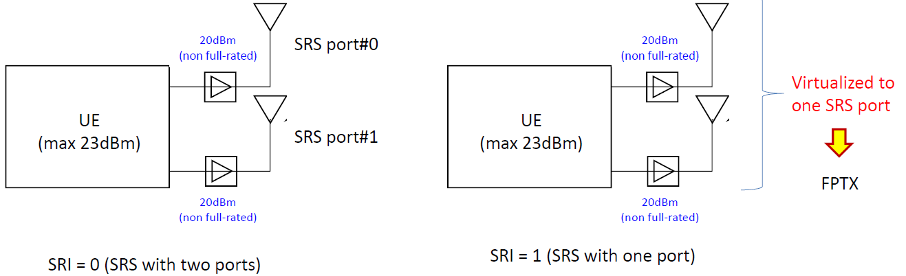

UE RF requirements for Transparent Tx Diversity (TxD);
(Release 17)
The present document has been developed within the 3rd
Generation Partnership Project (3GPP TM) and may be further
elaborated for the purposes of 3GPP.
The present document has not been subject to any approval process by the
3GPP Organizational Partners and shall not be implemented.
This Specification is provided for future development work within 3GPP
only. The Organizational Partners accept no liability for any use of
this Specification.
Specifications and Reports for implementation of the 3GPP TM
system should be obtained via the 3GPP Organizational Partners'
Publications Offices.
3GPP
Postal address
3GPP support office address
650 Route des Lucioles - Sophia Antipolis
Valbonne - FRANCE
Tel.: +33 4 92 94 42 00 Fax: +33 4 93 65 47 16
Internet
http://www.3gpp.org
Copyright
Notification
No part may be reproduced except as authorized by written
permission.
The copyright and the foregoing restriction extend to reproduction in
all media.
UMTS™ is a Trade Mark of ETSI registered for the benefit of its
members
3GPP™ is a Trade Mark of ETSI registered for the benefit of its
Members and of the 3GPP Organizational Partners
LTE™ is a Trade Mark of ETSI registered for the benefit of its Members
and of the 3GPP Organizational Partners
GSM® and the GSM logo are registered and owned by the GSM
Association
This Technical Report has been produced by the 3rd Generation
Partnership Project (3GPP).
The contents of the present document are subject to continuing work
within the TSG and may change following formal TSG approval. Should the
TSG modify the contents of the present document, it will be re-released
by the TSG with an identifying change of release date and an increase in
version number as follows:
Version x.y.z
where:
x the first digit:
1 presented to TSG for information;
2 presented to TSG for approval;
3 or greater indicates TSG approved document under change
control.
y the second digit is incremented for all changes of substance, i.e.
technical enhancements, corrections, updates, etc.
z the third digit is incremented when editorial only changes have
been incorporated in the document.
1 Scope
The present document is a technical report for NR UE RF requirements
for Transparent Tx Diversity (TxD).
2 References
The following documents contain provisions which, through reference
in this text, constitute provisions of the present document.
- References are either specific (identified by date of publication,
edition number, version number, etc.) or non‑specific.
- For a specific reference, subsequent revisions do not apply.
- For a non-specific reference, the latest version applies. In the
case of a reference to a 3GPP document (including a GSM document), a
non-specific reference implicitly refers to the latest version of that
document in the same Release as the present document.
[1] 3GPP TR 21.905: "Vocabulary for 3GPP Specifications".
[2] R1-2007245, “Reply LS on feasibility of UL FPTx modes and
transparent TxD for certain UE implementation”, RAN1
3 Definitions of
terms, symbols and abbreviations
3.1 Terms
For the purposes of the present document, the terms given in 3GPP
TR 21.905 [1] and the following apply. A term defined in the present
document takes precedence over the definition of the same term, if any,
in 3GPP TR 21.905 [1].
3.2 Symbols
For the purposes of the present document, the following symbols
apply:
3.3 Abbreviations
For the purposes of the present document, the abbreviations given in
3GPP TR 21.905 [1] and the following apply. An abbreviation defined in
the present document takes precedence over the definition of the same
abbreviation, if any, in 3GPP TR 21.905 [1].
4 TxD Basic Requirements
Editor’s note: This clause intends to summarize the key part of
technical agreements and related background of basic requirements for
TxD.
4.1 Antenna number and
declaration
4.1.1 Agreements
Only two antenna connectors were considered for TxD feature.
UE declares which connectors will be active per band under test. TE
needs to detect ACK and NACK and any other expected response from UE
from all declared TX antenna connectors.
- The word “active” can be replaced by “used for TxD during one test
procedure”. (Not necessarily to have transmission all the time.)
- UE declaration needs to describe exact two antenna connectors under
test.
4.1.2 Study process
Only two antenna connectors were considered for TxD feature and this
has been used in multiple cases and appeared in multiple WFs.
The earliest case can reference to agreed WF R4-2005652 for eMIMO in
RAN4#94-e-bis, in which the following agreements were made:
- If transparent TxD is used in Scenario-1:
- Transmission come out from two antenna connectors;
In RAN4#97-e meeting, in [R4-2016959] and a WF [R4-2016830] was also
agreed. The agreements reached are as following:
- Declaration for Default TX Connector
- UE declares which connectors will be active per band under
test. TE needs to detect ACK and NACK and any other expected response
from UE from all declared TX antenna connectors.
- The word “active” can be replaced by “used for TxD during one
test procedure”. (Not necessarily to have transmission all the
time.)
- UE declaration needs to describe exact two antenna connectors
under test.
In agreed MPR evaluation assumptions R4-2105331, two antennas are
also confirmed in :
- RF assumptions:
- 4dB post PA losses
- 10dB antenna isolation
- Equal power and Equal back-off power split for the two
antennas
4.2 Summation for Power and
Emission
4.2.1 Agreements
RAN4 agree to define requirements for MOP and emission so that power
is measured correctly for all implementations, including UE with
transparent TxD:
- Use “requirements are defined as the sum of powers from both
connectors”.
- This shall be interpreted as: Measure the power and emissions per
connector and then sum them up afterwards.
- RAN4 will clean-up all requirements related to summing the powers
and emissions, including UL MIMO, UL full power transmission
requirement.
4.2.2 Study process
This issue has been discussed for how to write emission requirements
for several meetings, and gradually an agreement has been made in the
agreed WF R4-2011768 in RAN4#96-e in which the following agreements were
made:
Summing the Powers and Emissions
- RAN4 agree to define requirements for MOP and emission so that
power is measured correctly for all implementations, including UE with
transparent TxD:
- Use “requirements are defined as the sum of powers from both
connectors”.
- This shall be interpreted as: Measure the power and emissions
per connector and then sum them up afterwards.
- RAN4 will clean-up all requirements related to summing the
powers and emissions, including UL MIMO, UL full power transmission
requirement.
Option 3: RAN4 considers to update the endorsed draft CR for UL
Tx diversity EVM measurement method with the method presented in
R4-2107112. (R&S)
Agreements(GTW):
Option 2
- For UL MIMO, Option 3 or options along those lines can be
further considered. Once a solution is agreed, RAN4 can discuss from
which release onwards it applies
4.3.1.2 Study process
Originally there was a different agreement from the final one. In
agreed WF R4-2008465 in RAN4#95-e as following:
In RAN4#96-e, new scheme was proposed in R4-2011519, and the EVM
discussion was re-started, there is one agreed WF R4-2011768 in which
the following agreements were made
EVM Requirement for Transparent TxD
- Background:
- In RAN4#95e, RAN4 agree to define EVM for transparent TxD
as:
Option 3: RAN4 considers to update the endorsed draft CR for UL
Tx diversity EVM measurement method with the method presented in
R4-2107112. (R&S)
Agreements(GTW):
Option 2
For UL MIMO, Option 3 or options along those lines can be further
considered. Once a solution is agreed, RAN4 can discuss from which
release onwards it applies
4.3.2 Spectrum flatness
4.3.2.1 Agreements
The agreements were as following:
Agreements
Based on R4-2108793 with the following updated equation for
composite equalizer:
This issue has been raised in RAN4#99-e in R4-2108793, and agreements
were documented in the agreed WF R4-210774.
4.4 Maximum output power
reduction
4.4.1 General
4.4.1.1 Agreements
Here are some early stage agreements before a comprehensive
evaluation.
It has been agreed that MPRs for UL-MIMO would need to be
re-visited.
For MPR Requirement for Transparent TxD:
RAN4 agree MPR defined for TxD is applied to the total output
power rather than at each antenna connector
For TxD and UL-MIMO, it has been agreed:
2 Tx MPR should be the same MPR requirement for TX Diversity and
UL MIMO for the same power class.
For eMIMO and ULFPTx related, The agreement reached is as
following:
“Chair: It is agreed that one set of MPR requirements should be
adopted for both UL MIMO (including ULFPTx) and TxD”
WF R4-2105331 is agreed MPR evaluation assumptions, and it is agreed
that an evaluation is necessary to further progress the MPR work.
The key agreements and the related evaluation are incorporated in
clause 4.4.2, 4.4.3 etc.
4.4.1.2 Study process
Here are some early stage studies before a comprehensive
evaluation.
In RAN4#94-e-bis, in the WF R4-2005216, it has been agreed
- R15 UL MIMO emission requirements shall apply to UE level.
- Relating MPRs are need to be re-visited.
In RAN4#95-e, a WF R4-2008465 was agreed in which:
Issue 3-3-2: Unwanted emissions for Transparent TxD: MPR
study
Possible WF:
Simulation/measurement assumptions for MPR study for 2Tx
UE’s
Follow 29 dBm WI assumptions in R4-2005190
Two 20dBm Tx chains are not precluded
Two 23dBm Tx chains are not precluded
Two 26dBm Tx chains are precluded
MPRs are defined for each power class separately
PC3 = 2x20dBm
PC2 = 2x23dBm
In RAN4#96-e, the agreed WF R4-2011768 has the following
contents:
MPR Requirement for Transparent TxD
RAN4 agree MPR defined for TxD is applied to the total output
power rather than at each antenna connector
In the meantime, for eMIMO WI, the MPR was an remaining issue:
“The Chairmain commented that for PC2 and PC3, MPR issues related
to 2TX, including UL-MIMO, uplink full power transmission, and TxD, will
be further discussed in TEI16.”
In RAN4#97-e meeting, the transparent TxD was discussed under TEI16
as documented in [R4-2016959] and a WF [R4-2016830] was also agreed.
MPR for Transparent and UL MIMO
Whether 2 Tx MPR should be the same MPR requirement for TX
Diversity and UL MIMO for the same power class.
Agreement
- Option 1: Yes
For eMIMO and ULFPTx related, there is very few maintenance remains
and only MPR was discussed. The agreement reached is as following:
“Chair: It is agreed that one set of MPR requirements should be
adopted for both UL MIMO (including ULFPTx) and TxD”
In RAN4#98-e-bis, the MPR was extensively discussed, but no
agreements can be reached, but an evaluation is agreed to be
started:
CR related - MPR
Proposals:
Option 1: As in last meeting’s Endorsed CR R4-2107307
Option 2: Base on the proposals in R4-2104538
1.5dB offset for Edge and outer, 0.5dB offset for inner compared
to 1Tx
Option 3: Reconsider separating MPR requirements for UL-MIMO and
TxD
Also consider A-MPR impact in next issue and as in
R4-2107283
Option 4: Keep the same MPR with 1Tx
Option 5: Other solution
Agreements (GTW) :
RAN4 to start a evaluation campaign to derive the MPR values for
both UL-MIMO and TxD, with agreed evaluation assumptions and UE
implementations. Decisions will be made in the May meeting
Another WF R4-2105331 is MPR evaluation assumptions, it is agreed
that an evaluation is necessary to further progress the MPR work, and a
detailed assumptions were agreed. The contents were not listed.
Later studies are not listed here in a meeting by meeting manner. The
key evaluation and agreements are incorporated in clause 4.4.2, 4.4.3
etc.
4.4.2 MPR evaluation for TxD
4.4.2.1 Architecture and
reverse IMD impact
Transparent transmit diversity was defined in Release 15 but no
specific MPR has been evaluated at the time and especially PC2 for band
n77/78 and 79 was agreed to be based on 2Tx with two 23dBm capable
PAs.
In Release 16, UL MIMO feature was also defined for PC3 and assumed
that two 23dBm PAs were available thus the 1Tx PC3 MPR could be reused.
In Release 16 also, PC1.5 power class was defined based on a 2Tx
architecture using two PC2 PAs and related MPR was evaluated including
reverse IMD impact and specified.
In Release 17, it was agreed that proper evaluation of 2Tx PC2 MPR
for TxD was needed as 1TX PC2 MPR could not apply as is due to
additional non-linearity related to Reverse IMD but also from a slightly
different linearity operating point.
Because of the reverse IMD aspects, similation based on AM/PM
modelling of PAs is not properly describing the effect of the PAs
cross-coupling and this specific two PAs measurements must be conducted
with careful attention on waveform applied at each PA inputs to avoid
cancellation/re-construction mechanisms.
As it was agreed that TxD and UL MIMO should use the same MPR
requirement for the same power class and architecture, to have 2Tx MPR
requirement that is valid for both TxD and UL MIMO in different modes,
the evaluation is based on using waveform representative of:
TxD operation with SD-CDD (Small Delay-Cyclic Deleay Diversity) with
properly chosen delay between each transmit path
Single stream UL MIMO operation with properly chosen quadrature phase
offset between each transmit path
Two stream UL MIMO operation with uncorrelated signals in each
transmit paths.
Similarly, proper PA linearity calibration is needed for the
different cases:
PC3 (23dBm) capable PA lienarity operating point is based on reaching
22dBm with 30dB ACLR for 20MHz DFT-s-OFDM QPSK 100RB0 waveform
PC2 (26dBm) capable PA lienarity operating point is based on reaching
25dBm with 31dB ACLR for 20MHz DFT-s-OFDM QPSK 100RB0 waveform
Since emissions requirements are valid at the UE level and the tests
are performed on antenna connectors it was agreed that 2Tx UE emissions
are evaluated by using the power sum of emissions at each antenna
connector. It was also agreed that EVM will be measured on each
connector and a compound EVM will be derived.
In the following chapter, we will discuss the different architectures
that have been used as baseline assumption for the 2Tx MPR evaluation
and over architectural assumptions.
4.4.2.2
Baseline architecture for different power classes
4.4.2.2.1 2Tx PC3 with TxD
For 2Tx PC3 with TxD, consistent with Release 16, the baseline
architecture is based on two PC3 (23dBm) capable PAs and as such the 1Tx
PC3 MPR is applicable since each PA can meet the 1Tx MPR. Furthermore,
full UL transmit power is feasible since both antennas support a PC3
capable PA.
It should be noted that 1Tx PC3 A-MPR can also be reused with the
same justification.
Other architectures may be implemented for 2TX PC3, for example:
Two 20dBm PAs
One 23dBm PA with one 20dBm PA.
Although not precluded, these other implementations must comply with
the PC3 1Tx in both 2Tx and full UL transmit operation.
4.4.2.2.2 2Tx PC2 with TxD
For 2Tx PC2 with TxD, the baseline architecture is based on two PC3
(26dBm) capable PAs, but it can’t reuse the 1TX PC2 MPR since there is
additional reverse IMD contribution to emissions and at the linearity
calibration point, each PC3 PA is 1dB short in meeting the PC2 31dB
ACLR.
In order to allow consistent evaluation of PC2 2Tx MPR across
companies, the following assumptions were used:
PA calibration: each PC3 PAs are calibrated for 30dB ACLR 1dB MPR for
20MHz QPSK DFT-s-OFDM 100RB0 waveform
Post PA losses of 4dB
Antenna Isolation of 10dB.
Although not precluded, other implementations must comply with the
PC2 2Tx MPR defined for the baseline architecture, and benefit from
better linearity. As such, they could benefit from better MPR
requirement, but this optimization is postponed to later work in RAN4,
for example architectures including one or two PC2 capable PAs:
Two 26dBm PAs, in this case it was shown that a specific 2Tx MPR
could be derived from the PC1.5 MPR as it is the same architecture and
ACLR target thus MPR values are just reduced by 3dB (negative values
after the 3dB reductions are clamped to 0dB) since the reference power
is reduced to 26dBm instead of 29dBm. UL full power can be delivered on
both antennas without needed any swapping.
One 26dBm PA with one 23dBm PA, in this case it was shown that 1Tx
PC2 MPR since one of the PA is already capable of the PC2 MPR but
benefits from an intrinsic 3dB backoff that is more than enough to
compensate for the smaller PA reduced linearity and the additional
reverse IMD contribution. Furthermore, UL full power is feasible without
TxD.
4.4.2.2.3
Comparison to smartphone and FWA 2Tx PC1.5 case
Even if this report is focussed on PC2 TxD, it is of interest to
compare this work with similar work conducted in Release 17 for PC1.5
MPR optimization. Since PC1.5 is also based on 2Tx architecture using
two PC2 (26dBm) capable PAs it suffers from the same reverse IMD impact
but not from the reduced ACLR linearity since both PC2 and PC1.5 need to
meet 31dB ACLR.
In this MPR optimization work, for smartphone the same type of
architecture assumptions has been used than for the PC2 TxD work:
PA calibration: each PC2 PAs are calibrated for 31dB ACLR 1dB MPR for
20MHz QPSK DFT-s-OFDM 100RB0 waveform
Post PA losses of 4dB
Antenna Isolation of 10dB
Use of SD-CDD, phase shifted and uncorrelated waveforms
On top of this another set of assumptions were used to reflect better
antenna design of FWA devices and especially improved antenna isolation
which, in turn, would reduce the impact of reverse IMD. It was found
however that beyond some antenna isolation level, the PA outputs can
couple to the other PA inputs via limited PCB isolation. Given that
further limitation, it was decided that imoroved PCB isolation is also
assmed for FWA but that antenna isolation is still limited to 20dB
resulting in following MPR evaluation assumptions:
PA calibration: each PC2 PAs are calibrated for 31dB ACLR 1dB MPR for
20MHz QPSK DFT-s-OFDM 100RB0 waveform
Post PA losses of 4dB
Antenna Isolation of 20dB
Use of SD-CDD, phase shifted and uncorrelated waveforms.
4.4.2.2.4 Other 2Tx MPR
evaluations in Release 17
It should be noted that several 2CC with 2Tx cases were evaluated in
Release 17 on top this PC2 TxD effort:
PC2 contiguous UL CA with two PC2 PAs and 2LO (1PA per CC)
PC2 contiguous UL CA with two PC3 PAs and 1LO using TxD
PC2 contiguous UL CA with UL MIMO two PC3 PAs and 1LO
PC2 non-contiguous UL CA with two PC3 PAs and 1LO using TxD
PC2 non-contiguous UL CA with two PC2 PAs and 2LO (1PA per CC)
PC2 non-contiguous UL CA with one PC2 PA and one PC3 PA and 2LO (1PA
per CC)
In all these cases the same 10dB antenna isolation and 4dB post PA
losses where use with the associated PC2/PC3 PA calibrations and
specific 2Tx waveforms.
4.4.2.3 PC2
2Tx MPR measurements results and specification
4.4.2.3.1 Initial evaluation
results
Results provided in RAN4#100e for the basis of the MPR table proposal
were based on measurements of two coupled PAs with the following
assumptions:
PA calibration: each PC3 PAs are calibrated for 30dB ACLR 1dB MPR for
20MHz QPSK DFT-s-OFDM 100RB0 waveform
Post PA losses of 4dB
Antenna Isolation of 10dB.
Measurements included a selected set of waveforms with separate
waveforms for each path representative of the the 3 2Tx operations and
carefully selected to avoid cancelling/re-constructing behavior when
coupling the PAs:
QPSK CP-OFDM and DFT-s-OFDM waveforms for 5/20/50MHz with 15kHz
SCS
600ns delay SD-CDD waveforms for TxD evaluation
90deg phase shifted waveform for 1layer UL MIMO
Uncorrelated waveforms for 2 layer UL MIMO.
In order to provide a direct reading of the reverse IMD and PA
linearity impact, the two PC3 PA measurements were compared to the
measurement of one of the PA but biased for PC2 operaton,
When compared to 1Tx PC2 PA measurements in the same conditions, the
following additional back-off were identified:
Edge allocations can reuse 1Tx PC2 MPR as they are limited by the
spectrum shape in relation to BB filtering (WOLA) and are not dominated
by PA non-linearity
Outer allocations need 1dB additional back-off compared to
corresponding 1Tx PC2 MPR
Inner allocation need 1dB additional back-off compared to
corresponding 1Tx PC2 MPR.
Some discussion was also provided on the impact of RIMD to meet
emissions for higher order modulations:
with higher back-off already available, the additional back-off can
be reduced until limitation comes from tight EVM budget. For that same
reason, CP-OFDM already having higher MPR can have slightly lower
additional MPR, then everything is within the 0.5dB granularity.
Beyond this additional MPR needed to meet emissions, additional
back-off is also needed for high order modulations cases to compensate
for the additional contribution of RIMD and 1dB lower ACLR linearity.
Earlier contributions [4] estimated that 256 QAM DFT-s waveforms need 1
dB more MPR and CP-OFDM 2 dB more MPR for Tx diversity UEs. To be
consistent, we also suggest that 0.5dB be added for DFT 64QAM and 1dB
for CP.
Based on this input, the following way forwards were agreed in
RAN4#100e
Way Forward for 2Tx PC3 operation:
UE declaring PC3 and TxD or UL MIMO with or without
ULFPTx support shall meet 1Tx PC3 MPR
table
2TX TxD or UL MIMO PC3 single CC operation specification can use the
same 1Tx MPR as in Table 6.2.2-1 in 38.1010-1.
Way forward on 2Tx PC2 MPR for UEs implementing two PC3 PAs.
Table 4.4.2.3.1-1: Maximum power reduction (MPR) for 2Tx power class
2
Modulation
MPR (dB)
Edge RB allocations
Outer RB allocations
Inner RB allocations
DFT-s-OFDM
Pi/2 BPSK
≤ [3.5]
≤ [1]
≤ [0]
QPSK
≤ [3.5]
≤ [2]
≤ [0.5]
16 QAM
≤ [3.5]
≤ [2.5]
≤ [1.5]
64 QAM
≤ [3.5]
≤ [3]
256 QAM
≤ [5.5]
CP-OFDM
QPSK
≤ [3.5]
≤ [3.5]
≤ [2]
16 QAM
≤ [3.5]
≤ [3.5]
≤ [2.5]
64 QAM
≤ [4.5]
256 QAM
≤ [8.5]
Way forward for MPR for 2Tx PC2 ULFPTx MIMO based on at least one PC2
PA:
Further study if PC2 + PC3 architecture can reuse 1Tx PC2 MPR
Architecture using two PC2 PA can reuse 1Tx PC2 MPR similarly to the
agreement for PC3
It is further studied if an improved MPR can be based on the PC1.5MPR
since it correspond to the same PA configuration and emission
requirements (ACLR/SEM/EVM) with only a 3dB difference in the reference
power for MPR
Rel-17 Signaling to differentiate sets of PC2 MPR requirements for
different PA configurations can be further studied in phase 2.
Additional input was provided in the next meeting by another company
which allowed further refinement on higher order modulations and some
critical allocations.
It was also decided that a single set of PC2 2Tx requirements will be
used in Release 17 but that 1 antenna port transmission should take the
architecture in to account (presence of a full power PA or not).
Since it was agreed that both UL MIMO and TxD would use the same 2Tx
MPR table for the same power class and UE architecture, it was decided
that all the 2Tx MPR tables would be placed in the UL MIMO section D and
the TxD section G would point to the relevant tables.
4.4.2.3.2 Final
MPR values and comparison to other cases
After adjustments of the MPR based on two companies’ inputs
(highlighted in yellow) the 38.101-1 specification adopted the following
MPR table:
Table 4.4.2.3.2-1: Maximum power reduction (MPR) for power class 2
with dual Tx
Modulation
MPR (dB)
Edge RB allocations
Outer RB allocations
Inner RB allocations
DFT-s-OFDM
Pi/2 BPSK
≤ 3.5
≤ 1
0
QPSK
≤ 3.5
≤ 2
0.5
16 QAM
≤ 3.5
≤ 2.5
≤ 1.5
64 QAM
≤ 3.5
≤ 3
256 QAM
≤ 5.5
CP-OFDM
QPSK
≤ 4.0
≤ 3.5
≤ 2
16 QAM
≤ 4.0
≤ 3.5
≤ 2.5
64 QAM
≤ 4.5
256 QAM
≤ 8.0
To check the consistency of the MPR requirements, it is useful to
compare 2Tx PC2 MPR (highlighted in yellow) with the PC2 1Tx MPR and
PC1.5 2Tx smartphone and FWA MPR at least for DFT-s-OFDM QPSK inner
allocations. This comparison is shown in the table below.
Table 4.4.2.3.2-2: Maximum power reduction (MPR) comparision
Case
PC2 1Tx
PC2 2Tx
PC1.5
PC1.5 FWA
Inner MPR [dB]
≤ 0
≤ 0.5
≤ 0.5
≤ 0
The 0.5dB difference between 1Tx and 2Tx PC2 is representative of the
additive impact of reverse IMD and the slightly lower PA linearity.
For PC1.5 MPR, the smartphone 0.5dB worse MPR compared to 1Tx PC2 MPR
is representative of the reverse IMD impact while for the FWA case,
thanks to the higher antenna isolation the Reverse IMD impact is
negligible.
4.4.2.4 PC2 1Tx
fallback MPR depending on architecture
After consensus was reached on the 2Tx PC2 MPR for PC2 and it was
agreed that in the scope of release 17 a single MPR table will cover all
the different PA architectures, it was still needed to agree on what the
one antenna port fallbacks MPR would apply. This essentially depends on
the presence of a full powwr capable PA or not.
For one antenna port operation, it was agreed that 2Tx PC2 MPR would
still apply to UEs declaring TxD (no full power PA is assumed) while UEs
not declaring TxD (assuming at least one PC2 PA is present), the 1Tx PC2
MPR would apply.
4.5 Additional
Maximum output power reduction
4.5.1 Agreements
Editor’s note: The final requirements have not been set yet.
There were concerns that MPR change would mean A-MPR would have to be
impacted. After some discussions, it has been agreed postpone the
discussion on A-MPR and treat MPR first.
4.5.2 Study process
Editor’s note: The discussion process has not been completed yet.
In RAN4#98-e-bis, the A-MPR issue was raised and following agreements
were made.
CR related - MPR
Proposals:
Option 1: As in last meeting’s Endorsed CR R4-2107307
Option 2: Base on the proposals in R4-2104538
1.5dB offset for Edge and outer, 0.5dB offset for inner compared
to 1Tx
Option 3: Reconsider separating MPR requirements for UL-MIMO and
TxD
Also consider A-MPR impact in next issue and as in
R4-2107283
Option 4: Keep the same MPR with 1Tx
Option 5: Other solution
Agreements (GTW) :
RAN4 to start a evaluation campaign to derive the MPR values for
both UL-MIMO and TxD, with agreed evaluation assumptions and UE
implementations. Decisions will be made in the May meeting
CR related - A-MPR
Proposals
Option 1: A-MPR as band specific requirements could be decoupled
from the general TxD requirements
Option 2: Keeping the agreement of applying same MPR for UL MIMO
and Tx Diversity would mean changed to the UL MIMO AMPR, too.
PADJ, TX1 = power of the adjacent channel on TX port
1
POWN, TX1 = power of own channel on TX port 1
And TX2 similarly.
4.6.2 Study process
In RAN4#95-e, the ACLR for TxD had been agreed in WF R4-2008465.
5 Other related requirements
Editor’s note: This clause intends to summarize the key part of
technical agreements and related background of related requirements.
5.1 Power Class clarification
5.1.1 SA
5.1.1.1 Agreements
For both Rel-15 and Rel-16, there is the same clarification for
1-port fall back of SA UE power class for UL-MIMO as following:
“If UE is scheduled for single antenna-port PUSCH transmission by
DCI format 0_0 or by DCI format 0_1 for single antenna port codebook
based transmission, the requirements in clause 6.2.1 apply for the
power class as indicated by the ue-PowerClass field in capability
signalling.”
This means that the 1-port fall back of SA UE power class for UL-MIMO
is aligned to the power class as indicated by the ue-PowerClass field in
capability signalling.
5.1.1.2 Study process
There is a debate on 1-port transmission fall back mode for SA in
both Rel-15 and Rel-16.
For Rel-16, in the agreed WF R4-2005652 for eMIMO in RAN4#94-e-bis,
there are some agreements regarding the TxD applicability and
relationship with eMIMO features:
Transparent Tx Diversity (TxD) in Rel-16 (TBD its
applicability for UEs supporting or not supporting full power
transmission)
…
From Rel-16 and beyond, SA UE declaring PC2 HPUE shall have 26dBm
MOP for both 1TX port transmission and 2TX UL-MIMO (if
supported)
For UE with 23dBm+23dBm PA architecture, transparent TxD shall be
used to have 26dBm MOP for 1TX port transmission.
TBD how the requirements will be specified
Conclusion of Rel-16 discussion will have no impact on
Rel-15
And there are following description in Rel-16 38.101-1:
“If UE is scheduled for single antenna-port PUSCH transmission by
DCI format 0_0 or by DCI format 0_1 for single antenna port codebook
based transmission, the requirements in clause 6.2.1 apply for the
power class as indicated by the ue-PowerClass field in capability
signalling.”
For Rel-15, an agreement was reached in R4-2107740 in RAN4#99-e,
Power class related- Fallback to 1-port Tx for SA in
Rel-15
Proposals
Option 1: Confirm ue-PowerClass should always be supported for
1-port transmission fall back mode for SA in Rel-15.
UE do not support TxD capability would equip a full power
chain
For UE support TxD capability, when falls back to 1-port
transmission, it is also reasonable to suppose it would use TxD to
achieve ue-PowerClass in standalone mode
Option 2: Others
Tentative agreements:
Option 1
Discuss in next meeting whether Rel-15 CR would be introduced to
clarify the understanding
In RAN4#100-e, no agreements were reached on this issue.
In RAN4#101-e, this issue was moved to Rel-15 maintenance agenda, and
a Rel-15 CR R4-2118286 reflecting previous agreement was agreed as
following:
If UE is scheduled for single antenna-port PUSCH transmission by
DCI format 0_0 or by DCI format 0_1 for single antenna port codebook
based transmission, the requirements in clause 6.2.1 apply for the
power class as indicated by the ue-PowerClass field in capability
signalling.
This clarification is identical to Rel-16. This means that the 1-port
fall back of SA UE power class for UL-MIMO is aligned to the power class
as indicated by the ue-PowerClass field in capability signalling.
In RAN4#101-e-bis, during the discussion of the draft TP, it was
pointed out that although some companies' understanding of the intention
is SA UE declaring PC2 HPUE shall have 26dBm MOP either by full power
chain 1Tx or using TxD, the current requirements for applicability is
referenced to clause 6.2.1, which is specific for 1Tx, thus make TxD
support difficult. The TP drafting was delayed for SA part.
In RAN4#102, it is proposed to let the spec stay as it is as this is
already a stable agreement, and no more correction/update seems possible
or needed.
5.1.2 EN-DC
5.1.2.1 Agreements
Depending on UE architecture, NR part of EN-DC may have different
power class compared to SA NR for the same UE which can support both SA
and EN-DC.
For Rel-16, dedicated signalling was introduced for NR part power
class in EN-DC, and the NR in EN-DC was to follow this power class. It
was specified in 38.101-3 as following:
“If UE indicates IE powerClassNRPart-r16 as defined in TS 38.331
[9] in EN-DC, UE shall meet NR requirements according to this power
class.”
For Rel-15, no dedicated signalling was introduced for NR part power
class in EN-DC. It was specified in 38.101-3 as following:
” Unless otherwise stated, if UE indicates IE
maxNumberSRS-Ports-PerResource = n2 in NR standalone operation mode, the
said UE shall meet the NR requirements for either power class 2 or power
class 3 in EN-DC within FR1 if UE indicates IE
maxNumberSRS-Ports-PerResource = n1 for EN-DC on this NR
band.”
5.1.2.2 Study process
For Rel-15:
The power class ambiguity issue was raised since there could be
different understanding in SA and EN-DC case, and some ambiguity was
originated from the transparent nature of TxD. An early summary
R4-1913067 was agreed in RAN4#92bis, in which it was agreed that no new
signalling would be introduced for Rel-15.
In RAN4#93, Rel-15 CR R4-1916137 for clarification of ENDC power
class has been agreed, in which clarification was added for the scenario
that UE supports PC2 SA NR with 2x23 dBm PAs will report PC2 for NR even
though it only support PC3 for NR in EN-DC if UE do not declare support
of 2-layer for EN-DC on this NR band:
” Unless otherwise stated, if UE indicates IE
maxNumberSRS-Ports-PerResource = n2 in NR standalone operation mode, the
said UE shall meet the NR requirements for either power class 2 or power
class 3 in EN-DC within FR1 if UE indicates IE
maxNumberSRS-Ports-PerResource = n1 for EN-DC on this NR
band.”
This has become a “famuous sentence” in RAN4 for a long time, and is
kept as it is. The discussion can be divided into following phases:
Phase 1:
The “famous sentence”, come from the intention that UE do not equip a
full-power PA may declare PC2 for SA NR by means of TxD. Vendors want to
keep the possibility of non-full power PA implementation for PC2 in
Rel-15 (This point itself may also controversial). However, since there
is no separate capability for NR within ENDC for Rel-15, without further
clarification, one can only assume same power class between NR SA and NR
within EN-DC. Then it comes the “famous sentence”, to provide UE this
flexibility. However, the descriptions were very indirect and involves
many parameters, since there is no sign/capability of architecture.
Phase 2:
After a while, and the “famous sentence” was stable. Some company
raise the proposal to revise Pcmax related parameters to achieve more
precise PHR reporting, to better adapt the general part “famous
sentence”. Later other company has slightly different ones that always
assumes a “relaxation” for lower power class.
Phase 3:
In RAN4#99, with newly introduced TxD capability used by Rel-15,
there is a possible new way to signal architecture by vivo, that is: A
UE without TxD capability has to have a full power PA for Rel-15. This
was also means TxD capability UE may not have full-power PA. This is the
first time that this no-full power PA architecture can be implicitly
signaled. To utilize this, a draft CR R4-2113013 was endorsed, and the
applicability of this “famous sentence” can be reduced, while keeping
the implementation flexibility.
Phase 4:
In RAN4#100e, Different CRs were raised to adapt endorsed CR
R4-2113013 was raised. However, no conclusion can be made, and the
original endorsed CR in RAN#99e was obsolete since opposed by
companies.
In RAN4#101e, this issue was moved to TEI15 agenda, and it was agreed
in R4-2119835 that everything to be kept as it is and no more revision
is pursued on this issue in Rel-15.
A more detailed history background can reference to a summary
document in R4-2118285.
For Rel-16:
The power class ambiguity issue for Rel-16 was deviated from Rel-15.
The problem for Rel-16 was raised in RAN#88-e in RP-201032. The solution
of introducing specific RAN2 signalling was agreed and an LS RP-201392
was approved.
The power class for NR band in MR-DC could be different from that
indicated in SA mode. If the power class of NR part is reported for the
MR-DC, the UE shall meet the NR requirements for power class indicated
by the newly introduced IE. The NR power class in Pcmax should then use
the one indicated by the new IE instead.The Rel-16 EN-DC power class
ambiguity problem related to TxD was solved.
For power class related issues, a LS was sent back to GCF in
R4-2011903 to clarify the Rel-16 status for the power class issues,
while the Rel-15 remains to be discussed.
“”RAN4 thanks GCF CAG for the LS on power class ambiguities in
RAN4 specification and would like to inform GCF CAG about the latest
progress.
1. It is agreed that new power class capability signalling for NR
in EN-DC is introduced in Rel-16 to distinguish power class capability
of NR in EN-DC from power class capability of NR in SA.
2. It is agreed that Rel-16 UE shall meet same power class
requirements between single antenna port mode and UL MIMO in
SA.
3. It is agreed that transparent Tx diversity (TxD) is enabled at
least from Rel-16 RAN4 specification.
RAN4 will inform GCF about the progress of Rel-15 power class
clarification, once consensus is reached.”
5.2 SRS antenna switching
5.2.1 Agreements
Draft CR for TxD SRS IL was agreed in draft CR R4-2206518 in
RAN4#102e. It was agreed to use ΔPPowerClass = 3dB to cover
the 3dB power loss for the main atenna caused by TxD capability or PC1.5
(TxD is assumed defaut support for this kind of UE), and when further
indicated with SRS-TxSwitch capability ‘t1r2’ or ‘t1r4’ or ‘t1r1-t1r2’
or ‘t1r1-t1r2-t1r4’. The PCB intertion loss is covered by the
∆TRxSRS where 3dB or 4.5dB is reused for bands whose
FUL_high is lower than the FUL_low of n79 or whose
FUL_high is higher than the FUL_low of n79
respectively.
5.2.2 Study process
Editor’s note: The discussion process has not been completed yet.
In RAN4#addition, the SRS antenna switching was discussed. The email
summary is as in R4-2105440. The following agreements were captured:
Other Issues - Relation with SRS antenna switching
Proposals
Option 1: UE that supports transparent TxD can have antenna
switching SRS configured in the same band.
Option 1a. The ∆TRxSRS needs to be increased by 3 dB overall
except for the PC2 case which accommodates the use of PA with 3 dB lower
power for SRS antenna switching.
Option 1b. Other solutions or requirements.
Option 2: UE that supports transparent TxD can not have antenna
switching SRS configured in the same band.
Agreements:
Option 1
Further confirm SRS
Requirements based on transmission from physical antenna
connector and not by transparent TxD
Detailed requirements FFS
In RAN4#99-e, there is a specific agreed WF for SRS antenna switching
requirements for TxD in R4-2107981, since this is a complicated issue
that needs further discussion. The following agreements were
captured:
In GTW, the following are agreed
SRS antenna switching which was targeted for DL CSI would not use
UL antenna virtualization, i.e. UL TxD
SRS antenna switching functionality cannot be excluded for UE
supporting TxD.
And Chair guidance:
Leave discussion on concrete value for loss and how to combine
Option 1 and 2 to further email discussion.
Agreed WF
Introduce PC1.5 to spec
Explicit introduce TxD for SRS antenna switching IL, but how to
harmonize with the current SRS conditions are FFS, and the exact IL
values are FFS
At least following PC2 UE architectures with TxD but without
antenna virtualization for all antenna ports are to be analyzed in
#100e
23PA+23PA
26PA+23PA
26PA+26PA
At least 1T2R, 1T4R, 2T4R and 1T4R/2T4R srs-TxSwitch are to be
analyzed in #100e
A big CR will be used to capture the agreement in #100e together
with other TxD issues.
There are also more detailed background and reference paper in the
WF.
In RAN4#101-e, WF on SRS antenna switching requirements for TxD and
PC1.5 was agreed in R4-2120065. The following agreements were
captured:
Sub-Topic 3-1: use of ∆PPowerClass or 3 dB
bigger IL
The following way forward is achieved:
For TxD UE, the additional power reduction is
introduced:
Option 1: ΔPPowerClass = 3 dB for “TxD UE”
The detailed condition for “TxD UE” depends on Sub-Topic
3-2.
Option 2: Additional 3dB reduction is allowed for 1st
SRS port for ∆TRxSRS:
FFS the impact on other SRS ports
Sub-topic 3-3: PC1.5 should be handled part of TxD for
SRS IL or not.
The following agreement is achieved in GTW session
(5th Nov, Friday)
Agreement: PC1.5 should be allowed extra 3dB only because of
power class declaration
Sub-topic 3-4: Applicable clause for lower power SRS
relaxation due to TxD
The following way forward is achieved:
The applicable clause for lower SRS relaxation due to TxD should
be implemented in:
Option 1: Same as general, 6.2.4 (Ericsson, Oppo,
Huawei)
Option 2: TxD suffix G (Samsung, ZTE, Qualcomm)
Sub-topic 3-5: SRS virtualization for other usages than
antenna switching
The following way forward is achieved:
FFS whether or not SRS antenna port virtualization by using 2TX
antennas shall be applied for the following usages configured for SRS
resource set (other than antennaSwitching):
beamManagement
codebook
nonCodebook
FFS the case where SRS resource set is configured with the usage
other than antennaSwitching, but contains the SRS resource which is
shared with another SRS resource set configured for
antennaSwitching.
There are also more detailed background and reference paper in the
WF.
In RAN4#101bis-e, R4-2202350 Draft R17 CR on SRS IL for TxD was
discussed but not agreed but the following agreements were reached:
Agreement:
During the specification work, RAN4 assumes that only UE
supporting 23+23dBm for PC2 and 26+26dBm for PC1.5 shall report
TxD.
If 6dBm relaxation is allowed for PC2, it can only be allowed for
one port SRS, i.e., t1xxx
List all the possible configuration with one port.
Agreement: add power class 1.5 for
Delta_T_RxSRS.
In RAN4#102-e, R4-2206518 Draft CR on SRS IL for NR TxD was agreed.
Following agreements were reached.
Agreement: For Topic #3 and Topic #4, the
following principles are agreed
For UE supporting mode 1 and indicating TxD per band, then 3dB
relaxation will be applied.
For UE supporting mode 1 only, then 3dB relaxation won’t be
applied.
TxD requirements do not apply to UE supporting mode 0 and mode 2
with full power TMPI
Agreement:
The following changes for R4-2205224 are agreed
3dB when PC2 capable UE indicating txDiversity-r16 or PC1.5 [and
SRS-TxSwitch capability ‘t1r1-t1r2’ or ‘t1r1-t1r2-t1r4’ and] applied
during SRS transmission occasions with usage in SRS-ResourceSet set as
‘antennaSwitching’ with configured SRS resources in each SRS resource
set(s) consisting of one SRS port
Remove the following sentence from R4-2205224
3dB when UE indicating txDiversity-r16 and SRS-TxSwitch
capability 't2r4' and applied during SRS transmission occasions with
usage in SRS-ResourceSet set as ‘antennaSwitching’ with configured SRS
resources as the second resource in each SRS resource set(s) consisting
of two SRS ports;
In RAN4 spec, capture that PC1.5 implies TxD even if UE does not
indicate TxD in UE capability.
5.3 Uplink
Full power transmission (ULFPTx) for UL MIMO
5.3.1 Agreements
Editor’s note: The final requirements have not been set yet.
5.3.1.1 Single-antenna port
fallback
The requirements applicable when a UE is scheduled for single
antenna-port transmission by DCI format 0_0 or by DCI format 0_1 for
codebook-based transmission on a single antenna port.are summarized in
Table 5.3.1-1. The entries ‘Single TX’ and ‘Dual TX’ refer to the
requirements in clauses 6.2 and 6.2G (and their subclauses) of the
Rel-17 version of 38.101-1, respectively. The typical ULFPTx
architectures are described in Section 5.3.3.
Table 5.3.1-1: Single-antenna port applicability with an without TxD
indication
The requirement that Mode 0 UEs or UEs supporting Mode 2 Mechanism 2
meet the power class with a single connector (single TX) is driven by
the need for consistent virtualization among DCI 0_0 and 0_1 and among
single and two port SRS transmission.
One potential implementation that could be considered is to
virtualize two antenna port transmission by transmitting one port as the
sum of the TX chains, and the other as the difference of the two chains.
Since in this implementation, the UE virtualizes to form an SRS port,
two SRS ports must be transmitted in the same symbol on a TX chain,
which could degrade the PAPR of SRS transmission. The UE would need to
transmit two SRS ports on each PA in a symbol as described in [2].
Furthermore, the UE must use the same virtualization for PUSCH. With
such a virtualization for PUSCH, each Tx chain will carry two layers in
the case of rank 2 transmission. Therefore, the PAPR of PUSCH could be
degraded, which is contrary to the desire to support UL full power
transmission in the UE.
Another aspect to consider is consistent single port operation in DCI
0_0 and 0_1. If a UE is configured with one port, it must transmit PUSCH
in the same way it transmits SRS. Since DCI 0_0 is single port
transmission, then transmitting with DCI 0_0 and 0_1 should result in
the same PUSCH. Therefore, DCI 0_0 and 0_1 should use the same number of
connectors and requirements for single port transmission.
Hence a UE configured for Mode 2 Mechanism 2 shall the meet the power
class requirement one connector (i.e. without virtualization). A similar
argument holds for Mode 0.
5.3.1.2 SRS antenna switching
and ULFPTx
The requirements on the configured maximum output power
PCMAX,f,c (sub-clause 6.2.4 of 38.101-1) during SRS
transmission occasions do not depend on the full-power mode configured
but on indication of txDiversity-r16, the number of SRS ports
and the power class supported. Given this, for ULFPTx modes in Table
5.3.1-1 supported by UE implemenations also indicating
txDiversity-r16 using ‘dual TX’ for achieving full-power, the
requirements prevent antenna virtualization during single-port SRS
transmissions for DL CSI estimation.
5.3.2 Study process
Editor’s note: The discussion process and analysis have not been
completed yet.
In Rel-16, the feature of Uplink full power transmission (ULFPTx) is
introduced in the RAN1-led work item of “enhancements on MIMO for NR”.
During the Rel-16 RAN4 discussion on ULFPTx, there are some agreement
achieved related to transparent TxD.
In RAN4#95-e, there is agreed WF R4-2008462 in which the following
agreements in transparent TxD applicability related to ULFPTx was
made:
Transparent TxD’s applicability for UEs supporting or not
supporting ULFPTx in Rel-16
[Reconfirm previous agreement] “The applicability of Transparent TxD
is NOT related to UE supporting or not supporting Rel-16 ULFPTx”
[Newly added] In Rel-16, RAN4 ULFPTx requirement
needs to allow UE to use transparent TxD to achieve the required
transmission power in following cases:
Mode-1 UE use transparent TxD for single SRS port (either with
DCI_0_0 or single SRS port with DCI_0_1)
FFS transparent TxD can be used for UE configured with two SRS
ports
In RAN4#100-e, draft CR (R4-2115110), the MOP requirement for
fallback DCI in section 6.2D.1 is restricted to UE not indicating Tx
diversity (with or without ULFPTx configured). For UE indicating Tx
diversity (with or without ULFPTx), the MOP requirement in section
6.2G.1 shall be applied.
In RAN4#101-e, the detailed ULFPTx feature is reviewed, in which
different modes of ULFPTx have been analysed and captured in the clause
5.3.3.
In RAN4#102-e requirements for single-antenna fallback for UEs
configured with ULFPTx were agreed in R4-2206519. A summary of
discussions leading up to the agreement in sub-clause 5.3.1.1 can be
found in R4-2205887.
5.3.3
RF Architecture Review for UE with Rel-16 ULFPTx Feature
In Rel-16, RAN1 has introduced the feature of UL full power
transmission (ULFPTx) and RAN4 identified the corresponding impacts on
RAN4 requirement. It should be noted the clause 5.3.3 is provided to
introduce the ULFPTx feature which is intended to provide information
for the relevant Rel-17 TxD discussion, and specifically the three
ULFPTx modes are presented in the following sub-clauses.
ULFPTx Mode 1 is proposed for the UEs with non-Coherent or partial
coherent UL-MIMO codebook, with codbookSubset = nonCoherent.
Particularly, new TPMI (originally for fullCoherent codebook in Rel-15)
is enabled for partial-/non-coherent codebook as full-power transmission
purpose for Rel-16 ULFPTx Mode 1 capable UE, while the same power
scaling mechanism as Rel-15 is used. Although it is not explicitly
required, ULPFTx Mode 1 is more reasonable to be applied for UE with
either (1) UEs with no full-rated PAs on any of TX chains, or (2) UEs
with full rated PAs on the subset of TX chains. Because RAN4 discussion
is only restricted to 2TX case, so here below is the case which
introduce RAN4 specification impact:
Fig. 5.3.3.1-1. Illustration of Rel-16 ULFPTx Mode 1
Compared with Mode-1/0, ULFPTx Mode 2 is more complex, since two
mechanisms are specified, where one of them is configured by gNB.
Similar to Mode 1, although it is not explicitly required, ULPFTx Mode 2
is more reasonable to be applied for UE with either (1) UEs with no
full-rated PAs on any of TX chains, or (2) UEs with full rated PAs on
the subset of TX chains.
ULFPTx Mode 2 Mechanism-1 (SRS port virtualization):
In this Mechanism-1, UE is configured multiple SRS resources having
different number of ports, while the full power transmission is achieved
if SRI is indicated for the SRS with one port. In this mechanism-1, the
same power scaling as Rel-15 is applied.

Fig. 5.3.3.2-1. Illustration of Rel-16 ULFPTx Mode 2 (Mechanism-1,
SRS port virtualization)
ULFPTx Mode 2 Mechanism-2 (TPMI indication):
In this Mechanism-2, UE reports existing TPMI(s) available for full
power transmission, and the only difference comes from the different
behaviour of power scaling:
For full power TPMI, Rel-16 power scaling factor s = 1 is
applied;
For non-full-power TPMI, Rel-15 power scaling factor is applied, as
illustrated below.
ULFPTx Mode 0 is proposed for the UEs with full-rated PAs on each TX
chain. For UE supporting ULFPTx Mode 0, Rel-16 power scaling factor s =
1, which is compared with Rel-15 power scaling factor (i.e., s = ratio
of # non-zero PUSCH transmission power to # of SRS ports). For the below
case, Rel-16 ULFPTx Mode-0 can enable the full power transmission while
Rel-15 mechanism can only achieve half of power, i.e., s = ½ for TPMI =
{1 0}.
Fig. 5.3.3.3-1. Illustration of Rel-16 ULFPTx Mode 0
6 Applicability and
verification
Editor’s note: This clause intends to summarize the key part of
technical agreements and related background of applicability and
verification. For test related issues, the discussion process and the
key options were also prepared to be documented for future
reference.
6.1 Capability signalling
6.1.1 Agreements
For the signalling options for transparent TxD, as in the WF
R4-2103390 and outgoing LS R4-2103360, RAN4 has agreed to introduce a
new per-band capability signaling in Rel-16 for FR1 UEs supporting
transparent TxD. RAN4 would also like to ask RAN2 to enable
release-independent support of this new capability from Rel-15 for PC2,
if possible.
There is following reply from RAN2.
- RAN2 has discussed whether to enable release-independent support of
this new capability from Rel-15, and the following agreements have been
achieved:
- RAN2 can support release independent capability of transparent TxD
for Rel-15, by allowing early implementation of the Rel-16 CRs.
- It is possible to only apply the change for this new capability for
PC2 UEs for Rel-15, but RAN2 would like to understand whether the Rel-16
capability signalling applies for all PCs, while Rel-15 capability
signalling applies for just PC2 (as this difference in Rel-15 and Rel-16
capability might impact the signalling design)?
- RAN2 would also like to confirm whether this new capability has any
dependencies with other capabilities that should be captured by RAN2
(since the capability is intended as release independent, RAN2 may need
to capture such pre-requisites explicitly).”
After receiving the LS, it is agreed that capability singling for TxD
applies for all power classes for both Rel-15 and Rel-16 in the WF
R4-2107740.
The dependencies with other capabilities were still under
discussion.
In RAN4#100-e, it was formally approved by RAN4 in the LS out to RAN2
in R4-2115111 that:
- RAN4 would like to confirm the capability of transparent TxD
applies to all power classes equally in all the applicable releases via
a release independent manner.
This has clarified that the power classes would not be differentiated
for release independency.
In RAN4#108bis, during the discussion of 4Tx feature, it is agreed to
clarify that the legacy per-band TxDiversity capability introduced from
Rel-16 is for 2Tx only in the approved LS R4-2317617.
RAN4#109 clarified applicability of txDiversity2Tx-r18,
txDiversity4Tx-r18 or txDiversity-r16 in terms of single band (non-CA)
and CA, respectively in the approved LS R4-2321983. The essentials are
summarized below.
- txDiversity2Tx-r18 or txDiversity4Tx-r18 is applicable to both
single band (non-CA) case and CA case
- Support of txDiversity4Tx-r18 doesn’t require that of
txDiversity2Tx-r18
- No inheritance of support of any three txDiversity capabilities
from single band to band combination, i.e.,
- Support of txDiversity-r16 for a single band, or that of
txDiversity4Tx-r18 or txDiversity2Tx-r18 for a single band
band-combination means the support is applicable to the single band only
and not inherited to the band in any band combinations including the
band.
Whether to support TxD for the band in a band combination is
determined by txDiversity2Tx-r18 and/or txDiversity4Tx-r18, but not by
txDiversity-r16.
6.1.2 Study process
In RAN4#96-e, the signaling for Transparent TxD was started to be
discussed, and continued for several meetings without progress.
in RAN4#98-e, there is major break through in this topic with the TxD
capability signlaing and release independency. In the agreed WF
R4-2103390, the following agreements were made:
Signaling for Transparent TxD
Whether and how RAN4 introduce signalling for transparent
TxD:
Option 1: Introduce some sort of signaling by UE
Option 1a. Use ModifiedMPRbehavior bits to signal additional
relaxations;
Option 1b: Introducing a new ( per band capability) signalling
for TxD together with existing power classes
Capability reporting for supporting TxD
Option 1c: Introducing a new power class (e.g. PC2.5) for
TxD
Option 2: Based on UE vendor declaration.
Option 3: Using existing signalling to indicate the 2Tx
implementation capability.
Recommended WF
For R15 UEs, UE vendor declaration can be used in
testing
For R16 UEs, new signaling, i.e. 1b, is needed to inform the
network of the support of TxD. If the signaling can be made to enable
release-independent support of TxD from R15 can be consulted with
RAN2
It means that transparent TxD can be at least using UE vendor
declaration and used in testing for Rel-15.
For the signalling, an LS out R4-2103360 was agreed and sent to RAN2
with the following description and action:
“1. Overall Description:
RAN4 has agreed to introduce a new per-band capability signaling in
Rel-16 for FR1 UEs supporting transparent TxD.
RAN4 would also like to ask RAN2 to enable release-independent
support of this new capability from Rel-15 for PC2, if possible.
2. Actions:
To RAN2:
ACTION: RAN4 respectfully asks RAN2 to define
respective signalling in Rel-16 and discuss release independence to
Rel-15.”
In RAN4#99-e, RAN2 Reply LS was received in R4-2107616, in which the
feasibility of release independency to Rel-15 by allowing early
implementation was confirmed. Further questions were also raised to
about applicable power classes and if there are dependencies with other
capabilities;
“RAN2 thanks RAN4 for the LS on signalling scheme of transparent
TxD.
Regarding the new per-band capability signaling in Rel-16 for FR1 UEs
supporting transparent TxD, RAN2 can add the corresponding capability in
corresponding specification (TS 38.331 and TS 38.306).
RAN2 has discussed whether to enable release-independent support of
this new capability from Rel-15, and the following agreements have been
achieved:
RAN2 can support release independent capability of transparent TxD
for Rel-15, by allowing early implementation of the Rel-16 CRs.
It is possible to only apply the change for this new capability for
PC2 UEs for Rel-15, but RAN2 would like to understand whether the Rel-16
capability signalling applies for all PCs, while Rel-15 capability
signalling applies for just PC2 (as this difference in Rel-15 and Rel-16
capability might impact the signalling design)?
RAN2 would also like to confirm whether this new capability has any
dependencies with other capabilities that should be captured by RAN2
(since the capability is intended as release independent, RAN2 may need
to capture such pre-requisites explicitly).”
The key agreements for TxD and power class related issues were
documented in the agreed WF R4-2107740. The TxD related part is as
following:
In the WF, the applicable power class for capability signaling was
confirmed. However, the dependencies with other capabilities were still
under discussion.
LS related - Applicable power class for capability signaling in
different releases
Proposals:
Option 1: Applies for all Power Classes for both Rel-15 and
Rel-16
Option 2: Applies for only PC2 for Rel-15, and for all power
classes in Rel-16;
Option 3: Others
Agreement (GTW): Option 1
It means that RAN4 confirm that the capability singling applies for
all power classes for both Rel-15 and Rel-16.
In RAN4#100-e, the following contents were agreed in the LS out to
RAN2 in R4-2115111 to reflect the previous agreement:
RAN4 would like to confirm the capability of transparent TxD applies
to all power classes equally in all the applicable releases via a
release independent manner.
This has clarified that the power classes would not be differentiated
for release independency.
In addition, during the discussion, RAN2 has made agreements that
Rel-16 CRs would be approved for this TxD capability signalling, thus
conclude the discussion for the release.
In RAN4#108bis, during the discussion of 4Tx feature, it is agreed to
clarify that the legacy per-band TxDiversity capability introduced from
Rel-16 is for 2Tx only in the approved LS R4-2317617.
6.2 Applicable release
6.2.1 Agreements
TxD requirements would still in Rel-17 RAN4 specs since it is a
Rel-17 WI, and RAN4 would allow release independency from Rel-15 by
early implementation of the requirements in Rel-17.
RAN2 would introduce the capability signalling in Rel-16 RAN2 spec,
and allow release independency from Rel-15 by early implementation of
Rel-16 CRs.
6.2.2 Study process
In RAN4#92bis, a WF R4-1913067 was agreed. Though this WF was mainly
for power class issue, there is following contents closely related to
TxD:
Transparent TxD UE behaivor is not specified in Rel-15 RAN4 core
requirements
For the explanation of Rel-15 , the Chair’s explanation is this a
“fact” which reflect the situation of that point. From this point, the
need for specific requirements for TxD has been officially confirmed by
RAN4.
In RAN4#93, a reply LS R4-1916132 from RAN5 was received by RAN4. In
the LS, RAN5 reply that it cannot fully evaluate the impact TxD testing
since it’s unclear from RAN4 specification, in this LS RAN5 also this
question:
Clarify whether the FR1 Tx diversity applies from Rel.-15 or
Rel.-16.
By the time of RAN4#99, this question and LS was not replied and this
the main impendence of agreements.
In RAN4#94-e-bis, in the agreed WF R4-2005652 for eMIMO, there are
some agreements to confirm TxD should be supported at least from
Rel-16:
Transparent Tx Diversity (TxD) in Rel-16 (TBD its
applicability for UEs supporting or not supporting full power
transmission)
Transparent TxD shall be allowed for FR1 in Rel-16:
Necessary changes to Rel-16 RAN4 specification is needed to allow
the UE behavior of transparent TxD in FR1;
TBD (Accordingly RAN5 will change test cases to allow transparent
TxD)
There is a long debate that whether TxD can be supported from Rel-15,
and in RAN4#98-e, there is major break through in this topic with the
TxD capability signlaing and release independency. In the agreed WF
R4-2103390, the following agreements were made:
Signaling for Transparent TxD
Whether and how RAN4 introduce signalling for transparent
TxD:
Option 1: Introduce some sort of signaling by UE
Option 1a. Use ModifiedMPRbehavior bits to signal additional
relaxations;
Option 1b: Introducing a new ( per band capability) signalling
for TxD together with existing power classes
Capability reporting for supporting TxD
Option 1c: Introducing a new power class (e.g. PC2.5) for
TxD
Option 2: Based on UE vendor declaration.
Option 3: Using existing signalling to indicate the 2Tx
implementation capability.
Recommended WF
For R15 UEs, UE vendor declaration can be used in
testing
For R16 UEs, new signaling, i.e. 1b, is needed to inform the
network of the support of TxD. If the signaling can be made to enable
release-independent support of TxD from R15 can be consulted with
RAN2
After that the applicable release depend on the release dependency
which was discussed in the capability signaling part.
The remaining study process for capability signalling can be
referenced from clause 6.1.2. RAN2 final agreements are those signalling
would be introduced in Rel-16 RAN2 spec, while allow release
independency from Rel-15 by early implementation of Rel-16 CRs.
It should be noted that the TxD requirements would still in Rel-17
RAN4 specs since it is a Rel-17 WI, and RAN4 would allow release
independency from Rel-15 by early implementation of the requirements in
Rel-17.
6.3 Testing related
6.3.1 UE Behaviour under
Conformance Testing
6.3.1.1 Agreements
This issue is agreed to Leave these discussions to RAN5 and not
pursue them before agreement of RAN4 CR in RAN4#99, since no agreements
could be reached. The following options were listed for reference:
Background: Motivation is to guide how to test requirements that
require power changes such as relative power control.
Proposals:
Option 1a: UE will keep the tx diversity status unchanged in
conformance testing.
Option 1b: Test mode signalling is implemented to instruct UE to keep
TX div status unchanged
Option 2a: TE will detect and sum for every power step and change in
condition from declared connector, with no
precondition
Option 2b: TE will detect and sum for every power step and change in
condition from declared connector, based on
pre-condition that a repeatability of TxD activation/deactivation timing
in a UE is maintained can be fulfilled.
6.3.1.2 Study process
In RAN4#95-e, there is agreed WF R4-2008465 in RAN4#95e, first
introduce this issue.
Issue 3-3-6: UE behavior under conformance testing
Motivation is to guide how to test requirements that require
power changes such as relative power control
Option 1a: UE will keep the tx diversity status unchanged in
conformance testing.
Option 1b: Test mode signalling is implemented to instruct UE to
keep TX div status unchanged
Option 2: TE will detect and sum for every power step and change
in condition from all connector (according to the issue 3-3-5
outcome)
Unfortunately, basically there is no progress. In RAN4#98e, in the
agreed WF R4-2103390, this meeting is the last meeting to list the
detailed options in the WF. Though NO AGREEMENTS for any solution could
be reached, they could still be considered as future discussion basis
which is as following:
UE Behavior under Conformance Testing
Background: Motivation is to guide how to test requirements that
require power changes such as relative power control.
Proposals:
Option 1a: UE will keep the tx diversity status unchanged in
conformance testing.
Option 1b: Test mode signalling is implemented to instruct UE to keep
TX div status unchanged
Option 2a: TE will detect and sum for every power step and change in
condition from declared connector, with no
precondition
Option 2b: TE will detect and sum for every power step and change in
condition from declared connector, based on
pre-condition that a repeatability of TxD activation/deactivation timing
in a UE is maintained can be fulfilled.
In RAN4#99-e, it was agreed in WF R4-2107740 that the two
controversial testing related issues were moved to RAN5.
Remaining Issues - Testing related
issues
Proposals
Option 1: Leave these discussions to RAN5 and not pursue them
before agreement of RAN4 CR.
Option 2: Continue discussion in RAN4.
Agreement:
Option 1
6.3.2 Power Splitting Behaviour
6.3.2.1 Agreements
This issue is agreed to Leave these discussions to RAN5 and not
pursue them before agreement of RAN4 CR in RAN4#99, since no agreements
could be reached. The following options were listed for reference:
Option 1: Only allow equal power split between connectors
Excludes 17+17+20 dBm implementations
Excludes power control optimizations
Option 1a: Per instructed as test mode, UE should keep equal power
split between connectors in all cases.
Option 2: Allow any power split between connectors
6.3.2.2 Study process
In RAN4#95-e, there is agreed WF R4-2008465 in RAN4#95e, first
introduce this issue.
Issue 3-3-7: Power splitting behaviour
Motivation is to discuss and agree what implementations are
excuded
Option 1: Only allow equal power split between
connectors
Excludes 17+17+20 dBm implementations
Excludes power control optimizations
Option 2: Allow any power split between connectors
Note for discussion
RAN1 language mandates UE to split power equally between logical
antenna ports. This allows 17+17 dBm = port 1 and 20 dBm = port 2
case
What is the motivation for RAN4 to disallow this? Or power
optimization for example for 24 dBm output power realization 23 + 17 dBm
for maximized efficiency?
Unfortunately, basically there is no progress at all, apart from
introduce a new option with test mode. In RAN4#98e, in the agreed WF
R4-2103390, this meeting is the last meeting to list the detailed
options in the WF. Though NO AGREEMENTS for any solution could be
reached, they could still be considered as future discussion basis which
is as following:
Background: Motivation is to guide how to test requirements that
require power changes such as relative power control
Question 1: What would be the impact for the
requirements and testability with tentative equal power split
restriction?
Proposals:
Option 1: Only allow equal power split between connectors
Excludes 17+17+20 dBm implementations
Excludes power control optimizations
Option 1a: Per instructed as test mode, UE should keep equal power
split between connectors in all cases.
Option 2: Allow any power split between connectors
In RAN4#99-e, it was agreed in WF R4-2107740 that the two
controversial testing related issues were moved to RAN5.
Remaining Issues - Testing related
issues
Proposals
Option 1: Leave these discussions to RAN5 and not pursue them
before agreement of RAN4 CR.
Option 2: Continue discussion in RAN4.
Agreement:
Option 1
Annex A:
Agreements and Contributions Before RAN#92
Editor’s note: This clause intends to summarize and list the
agreements and contributions before RAN#92 during which a WI was
approved and no SR is available yet and serve as an index for the
research history. It is noted that there are cases that certain
agreement in certain meeting was repeated, disregarded or even reversed
in later stage, and effective one would also be captured in previous
clauses.
A.1 Agreements
Editor’s note: This clause intends to summarize the agreements and
basic background for every meeting.
A.1.1 Before RAN4#94-e-bis
General
Before RAN4#94-e-Bis can be regarded as early stages for the study of
TxD, there is no dedicated agenda for this topic and the papers were
spread across different topics such as maintenance, power class issue
and the eMIMO.
Starting point
The following LS can be regarded as the starting point of
introduction of UL transmission diversity concept for RAN4: In
RAN4#84-Bis Dubrovnik with LS R4-1710109 from RAN1 saying:
“For CP-OFDM waveform based PUSCH, operation with UL transmission
diversity is transparent to specification”.
Later RAN1 also made similar agreements for DFT-s-OFDM. This means UE
is allowed to implement diversity schemes and specifications should not
limit the implementations.
Early stage discussion and agreements:
There were early discussion and agreements of PA architecture for PC2
UE as in R4-1902497 in RAN4#90 documented.:
In Rel-15, for power class 2 UE PA configurations for UL-MIMO, RAN4
had the following two approved WFs [R4-1803259] and [R4-1816615], and
the key relating parts are listed below respectively:
“Only PA configurations of 23+23dBm for UL MIMO and 26dBm for 1Tx
are supported by specification for NR TDD bands for PC2 UE in
Rel-15”
“Clarify in the Rel-15 specification on ambiguous requirements
for UE supporting UL MIMO
Maximum output power
Clarity in the spec that if PC2 UE is configured for transmission
on single-antenna port, the requirements of the same power class in
subclause 6.2.1 apply for the UE.
How to configure for transmission on single-antenna port is up to
UE implementation”
In RAN4#92, a WF R4-1910343 was agreed in which following agreements
was made:
No specific requirements for TX diversity is written in RAN4
specification.
RAN4 will follow RAN1 agreements and is discussing possibility
for RAN4 requirements to accommodate TX diversity
LS to RAN5 will be sent to ask them to confirm feasibility of TX
diversity testing
The mentioned LS to RAN5 R4-1910344 has been agreed to inform RAN5
about the discussion on introducing Tx diversity requirements in FR1
(see R4-1908472 and R4-1909922) and ask RAN5 about the potential
testability issues with Tx diversity. In the LS it was stated that:
“During the discussion, concerns have been raised about the
testability of this feature, since UEs may utilize multiple antennas
during its uplink transmission. Considering the usage of the Tx
diversity scheme is up to the UE implementation, it may also be unknown
which uplink transmit antennas a UE uses at a certain point in
time.
RAN4 respectfully asks RAN5 to identify potential issues with the
testability of this feature, taking into account uplink transmission
from multiple potentially unknown UE antenna connectors.”.
In RAN4#92bis, a WF R4-1913067 was agreed. Though this WF was mainly
for power class issue, there is following contents closely related to
TxD:
Transparent TxD UE behaivor is not specified in Rel-15 RAN4 core
requirements
Further work needed in Rel-16 and impact on RAN5 conformance
testing investigateg, e.g, replacement of ”antenna connector” with
”antenna port”
For the explanation of Rel-15 , the Chair’s explanation is this a
“fact” which reflect the situation of that point. From this point, the
need for specific requirements for TxD has been officially confirmed by
RAN4.
In RAN4#93, a reply LS R4-1916132 from RAN5 was received by RAN4. In
the LS, RAN5 reply that it cannot fully evaluate the impact TxD testing
since it’s unclear from RAN4 specification:
“RAN5 has discussed the issues presented in the LS and has come
to the conclusion that it currently cannot fully evaluate the impact of
Tx diversity on UE testing, since in RAN5 understanding Tx diversity
requirements are unclear from RAN4 specification. To fully judge the
impact of Tx diversity on testing and test system design, RAN5 requires
defined requirements which need to be tested and/or an understanding of
the expected UE behaviour to be tested, since the Tx diversity behaviour
of the UE may impact also TC other than Tx, e.g. RRM, Demod, CSI as
outlined in [1].”
RAN5 also asked some specific questions to RAN4:
Define requirements for FR1 Tx diversity and clarify whether the
requirements apply at a UE or at the antenna connector level.
Confirm that the RAN5 assumption of a maximum of 2 UL antenna
connectors for Tx diversity is correct.
Clarify whether the FR1 Tx diversity applies from Rel.-15 or
Rel.-16.
In the same meeting RAN4#93, a Rel-15 CR R4-1916137 for clarification
of ENDC power class in R15 has been agreed in which clarification was
added for the scenario that UE supports PC2 SA NR with 2x23 dBm PAs will
report PC2 for NR even though it only support PC3 for NR in EN-DC if UE
do not declare support of 2-layer for EN-DC on this NR band:
” Unless otherwise stated, if UE indicates IE
maxNumberSRS-Ports-PerResource = n2 in NR standalone operation mode, the
said UE shall meet the NR requirements for either power class 2 or power
class 3 in EN-DC within FR1 if UE indicates IE
maxNumberSRS-Ports-PerResource = n1 for EN-DC on this NR
band.”
This has become a “famuous sentence” in RAN4 for a long time since it
creats a lot of controversies in upcoming meetings.
In RAN4#94, no agreements were made.
A.1.2 RAN4#94-e-bis
In this meeting, the TxD discussion were in two Email threads,
UL-MIMO related power class and eMIMO.
In the agreed WF R4-2005652 for eMIMO, there are some agreements
regarding the TxD applicability and relationship with eMIMO
features:
Transparent Tx Diversity (TxD) in Rel-16 (TBD its
applicability for UEs supporting or not supporting full power
transmission)
Transparent TxD shall be allowed for FR1 in Rel-16:
Necessary changes to Rel-16 RAN4 specification is needed to allow
the UE behavior of transparent TxD in FR1;
TBD (Accordingly RAN5 will change test cases to allow transparent
TxD)
From Rel-16 and beyond, SA UE declaring PC2 HPUE shall have 26dBm
MOP for both 1TX port transmission and 2TX UL-MIMO (if
supported)
For UE with 23dBm+23dBm PA architecture, transparent TxD shall be
used to have 26dBm MOP for 1TX port transmission.
TBD how the requirements will be specified
Conclusion of Rel-16 discussion will have no impact on
Rel-15
TBD how to capture the requirements for different UEs
Clarification on Transparent TxD (1/3)
Scenario-1:
NW use DCI format 0_0 to schedule PUSCH for 1layer 1Tx antenna
port transmission, or
NW configured 1 SRS port in one SRS resource and use DCI format
0_1 to schedule codebook-based PUSCH transmission PUSCH with precoder
[1] for 1layer 1Tx antenna port transmission.
Transparent TxD shall be allowed in Scenario-1;
If transparent TxD is used in Scenario-1:
Transmission come out from two antenna connectors;
FFS measurement configuration for transparent TxD transmission,
e.g.,
the way to adjustment of relative phase coherence between TX
branches;
the way to derive verdicts under the condition in which the
active antennas are unknown;
the way to derive EVM measurement results after measuring per
antenna connector;
etc.
Clarification on Transparent TxD (2/3)
Scenario-2:
UE supports 2 SRS ports;
NW configured 2 SRS ports in one SRS resource;
NW use DCI format 0_1 to schedule codebook-based PUSCH
transmission with precoder [1 0] or [0 1] in 1layer 2Tx precoder
codebook, which corresponding to 2 SRS ports in the SRS
resource
The scheduled precoder [1 0] or [0 1] in Scenario-2 is not
regarded as “transparent TxD” for two antenna connector
implementation.
In Scenario-2, can “transparent TxD” be applied to non-zero power
1 TX in precoder [1 0] or [0 1]?
Option-1 (Samsung, Intel): No.
Option-2: Yes
Clarification on Transparent TxD (3/3)
Scenario-3:
UE supports 2 SRS ports;
NW configured 2 SRS ports in one SRS resource;
NW use DCI format 0_1 to schedule codebook-based PUSCH
transmission with precoder [1 1] in 1layer 2Tx precoder codebook, which
corresponding to 2 SRS ports in the SRS resource.
The scheduled precoder [1 1] in Scenario-3 is not regarded as
“transparent TxD”. (Qualcomm, Intel, Samsung)
In addition, there is the following agreement documented in the
Chairman’s notes under this WF:
“The applicability of Transparent TxD is NOT related to UE supporting
or not supporting Rel-16 ULFPTx.”
The detailed discussion can be referenced to the Email discussion
summary R4-2005695.
In the power class related discussion, a WF R4-2005216 was agreed and
the contents is as following:
Requirements for SA UL MIMO PC2 UE are incomplete/ambiguous
in current R15 RAN4 specs.
Option1: Continue discussion to complete in R15.
Option2: Live with what we have now in r15, continue discussion
in R16
Discussion on technical issues needed for transparent Tx
diversity
This discussion does not differentiate between Rel-15 or
Rel-16
R15 UL MIMO emission requirements shall apply to UE
level.
Relating MPRs are need to be re-visited.
Corresponding work plan & assumptions to be discussed in
RAN4#95-e
Further discuss whether it is necessary to evaluate CDD based
TxDiv against 1 Tx antenna scheme.
R4-2003217 can be used as a reference.
Basically there is no concrete agreements related to either TxD or
power class issue. It should be noted that in R4-2003028, there is more
background for power class issue, and could be used as further reference
for earlier power class related background.
The Email summary can be reference to R4-2005687.
A.1.3 RAN4#95-e
The main agreements in this meeting was made under the eMIMO WI, and
the discussion of R15 power class didn’t have an WF in this meeting.
There is an incoming LS R4-2006116 from GCF was received for
clarfication of several power class inalignment issues from the views of
GCF.
In agreed WF R4-2008462, there is the following agreements in
transparent TxD applicability related to ULFPTx
Transparent TxD’s applicability for UEs supporting or not
supporting ULFPTx in Rel-16
[Reconfirm previous agreement] “The applicability of Transparent
TxD is NOT related to UE supporting or not supporting Rel-16
ULFPTx”
[Newly added] In Rel-16, RAN4 ULFPTx requirement
needs to allow UE to use transparent TxD to achieve the required
transmission power in following cases:
Mode-1 UE use transparent TxD for single SRS port (either with
DCI_0_0 or single SRS port with DCI_0_1)
FFS transparent TxD can be used for UE configured with two SRS
ports
An LS R4-2009171 was agreed and sent to RAN1, in order to make
progress of certain discussion of transparent TxD related issues, to get
some clarification from RAN1. The contents are as following:
In RAN4 study of ULFPTx under eMIMO WI, enabling transparent Tx
diversity (TxD) was agreed at least from Rel-16, and the applicability
of transparent TxD is NOT related to UE supporting or not supporting
Rel-16 ULFPTx. Two possible cases were identified in RAN4 to use
transparent TxD to achieve the required transmission power, i.e. for a
FR1 UE having two TX branches/antennae,
First case: Transparent TxD for UE configured with single SRS
port (either with DCI_0_0 or single SRS port with DCI_0_1);
Second case: Transparent TxD for UE configured with 2 SRS ports
(FFS whether TxD is feasible in this case).
For the second case, two possible methods to transmit a
multi-port SRS resource (i.e. 2Tx ports) with two PAs (PA1 and PA2) were
considered, i.e.
Method-1: SRS port-1 maps to PA1, SRS port-2 maps to PA2
Method-2: SRS port-1 maps to PA1+PA2, SRS port-2 maps to
PA1+PA2
In order to make progress of corresponding discussion of
transparent TxD related issues, RAN4 would like to get some
clarification from RAN1 for the feasibility of the second case.
Question 1: Whether the two mentioned methods
are both feasible to transmit the full output power?
Question 2: If answer is yes, which ULFPTx modes
can be supported for these two methods?
In agreed WF R4-2008465, though not much agreements, many TxD
specific issues were raised and options provided. From this point, the
discussion for TxD become more speed up and more systematic.
Issue 3-3-1: Summing the power and emissions
Motivation is to define requirements so that power is measured
correctly for all implementations
Option 1: Use “requirements apply to a sum of both
connectors”.
Option 2: Use “measured as sum of each antenna
connector”.
Issue 3-3-2: Unwanted emissions for Transparent TxD: MPR
study
Possible WF:
Simulation/measurement assumptions for MPR study for 2Tx
UE’s
Follow 29 dBm WI assumptions in R4-2005190
Two 20dBm Tx chains are not precluded
Two 23dBm Tx chains are not precluded
Two 26dBm Tx chains are precluded
MPRs are defined for each power class separately
PC3 = 2x20dBm
PC2 = 2x23dBm
Issue 3-3-2: Unwanted emissions for Transparent TxD: how to write
emission requirements
Motivation is to ensure correct requirement setting for unwanted
emissions
Option 1: Define “requirements apply to a sum of both
connectors”. Issue 3-3-1 option 1
Option 2: Define “measured as the sum of the emissions from all
antenna connectors”. Same as issue 3-3-1 Option 2
Option 3: Measured per antenna connector against a 3 dB tighter
emissions requirement per connector (for two antenna
connectors).
Motivation is to clarify what is UE behavior and TE assumptions
in RX and BB tests
Narrow down to one of the following in next meeting
Option 1a: TE needs to detect all antenna connectors for ACK and
NACK and any other expected response from UE
Option 1b: TE needs to detect all declared TX antenna connectors
for ACK and NACK and any other expected response from UE
Option 2: UE declares which connector is primary TX connector
from which ACK and NACK and any other expected response from UE is
transmitted in all cases
And send LS to RAN5 about RAN4 conclusion
Issue 3-3-6: UE behavior under conformance testing
Motivation is to guide how to test requirements that require
power changes such as relative power control
Option 1a: UE will keep the tx diversity status unchanged in
conformance testing.
Option 1b: Test mode signalling is implemented to instruct UE to
keep TX div status unchanged
Option 2: TE will detect and sum for every power step and change
in condition from all connector (according to the issue 3-3-5
outcome)
Issue 3-3-7: Power splitting behaviour
Motivation is to discuss and agree what implementations are
excuded
Option 1: Only allow equal power split between
connectors
Excludes 17+17+20 dBm implementations
Excludes power control optimizations
Option 2: Allow any power split between connectors
Note for discussion
RAN1 language mandates UE to split power equally between logical
antenna ports. This allows 17+17 dBm = port 1 and 20 dBm = port 2
case
What is the motivation for RAN4 to disallow this? Or power
optimization for example for 24 dBm output power realization 23 + 17 dBm
for maximized efficiency?
Among them actually only Issue 3-3-3 and Issue 3-3-4 are
agreements without different options, and issue 3-3-4 was gradually
reversed in later stage.
The Email summary for eMIMO and R15 power class can be found in
R4-2008946 and R4-2008935.
A.1.4 RAN#88-e
The power class ambiguity issue for Rel-16 was raised in RAN#88-e in
RP-201032. The solution of introducing specific RAN2 signalling was
agreed and an LS RP-201392 was approved.
The power class for NR band in MR-DC could be different from that
indicated in SA mode. If the power class of NR part is reported for the
MR-DC, the UE shall meet the NR requirements for power class indicated
by the newly introduced IE. The NR power class in Pcmax should then use
the one indicated by the new IE instead.The Rel-16 EN-DC power class
ambiguity problem related to TxD was solved.
A.1.5 RAN4#96-e
In this meeting, TxD related requirements were mainly discussed with
power class related issue in one thread.
There is one agreed WF R4-2011768 in which the following agreements
were made:
Summing the Powers and Emissions
RAN4 agree to define requirements for MOP and emission so that
power is measured correctly for all implementations, including UE with
transparent TxD:
Use “requirements are defined as the sum of powers from both
connectors”.
This shall be interpreted as: Measure the power and emissions per
connector and then sum them up afterwards.
RAN4 will clean-up all requirements related to summing the powers
and emissions, including UL MIMO, UL full power transmission
requirement.
MPR Requirement for Transparent TxD
RAN4 agree MPR defined for TxD is applied to the total output
power rather than at each antenna connector
For EVM, in response to newly raised proposals, the WF has the
following update:
EVM Requirement for Transparent TxD
Background:
In RAN4#95e, RAN4 agree to define EVM for transparent TxD
as:
RAN4 further study new test method and EVM definition proposed in
R4-2011519:
FFS whether or not to use new EVM definition to replace above
definition.
RAN4 agree the location in Specification to capture EVM
definition for transparent TxD, as
Annex F
For other issues, different options were raised and basically no
agreements and progress were made, the titles were included below while
the details were omitted.
Declaration for Default TX Connector
UE Behavior under Conformance Testing
Power Splitting Behavior
Signaling for Transparent TxD
Applicability of Transparent TxD Requirement
CDD-related Requirement
For power class related issues, a LS was sent back to GCF in
R4-2011903 to clarify the Rel-16 status for the power class issues,
while the Rel-15 remains to be discussed.
“”RAN4 thanks GCF CAG for the LS on power class ambiguities in
RAN4 specification and would like to inform GCF CAG about the latest
progress.
1. It is agreed that new power class capability signalling for NR
in EN-DC is introduced in Rel-16 to distinguish power class capability
of NR in EN-DC from power class capability of NR in SA.
2. It is agreed that Rel-16 UE shall meet same power class
requirements between single antenna port mode and UL MIMO in
SA.
3. It is agreed that transparent Tx diversity (TxD) is enabled at
least from Rel-16 RAN4 specification.
RAN4 will inform GCF about the progress of Rel-15 power class
clarification, once consensus is reached.”
The detailed Email summary is in R4-2011860.
In addition, a draft CR to reflect the agreements of new UE
capability signalling to reflect the power class for NR band in MR-DC
could be different from that indicated in SA mode was technically
endorsed in R4-2011770. The contribution was discussed during email
thread [96e][121] NR_R16_Maintenance. The discussion was recorded in
R4-2011861.
For eMIMO, reply LS R4-2013040 was received from RAN1 in that the
following answers were provided:
Question 1: Whether the two mentioned methods are both feasible
to transmit the full output power?
Answer 1: From RAN1’s perspective, both Method-1 and Method-2 can
be supported for UL full power transmission.
For two SRS port transmission in method-2, the UE will need to
transmit two SRS ports on each PA in a symbol, while for method-1 each
PA carries one SRS port.
Question 2: If answer is yes, which ULFPTx modes can be supported
for these two methods?
Answer 2: From RAN1’s perspective, Method-1 can be supported for
any UL full power transmission modes, and Method-2 can be supported at
least for Mode-2 and Mode-full power (i.e., the other mode).
Question 3: Whether the ULFPTx mode-2 and the other ULPFTx mode
are feasible for FR2 UE?
Answer 3: From RAN1’s perspective, UL full power modes {Mode-1,
Mode-2 and Mode-full power (i.e., the other mode)} can be supported for
FR2.
It can be seen that RAN1 do not mandate any implementation for those
modes.
The previously endorsed feature CRs was officially agreed for
38.101-1 and 38.101-2 in R4-2011762 and R4-2011920 respectively. Some
remaining issues were put into maintenance stage from next meeting as
documented in the chairman’s notes:
“The Chairmain commented that for PC2 and PC3, MPR issues related
to 2TX, including UL-MIMO, uplink full power transmission, and TxD, will
be further discussed in TEI16.”
The Email summary for eMIMO can be referenced in R4-2011852.
A.1.6 RAN4#97-e
In RAN4#97-e meeting, the transparent TxD was discussed under TEI16
as documented in [R4-2016959] and a WF [R4-2016830] was also agreed. The
agreements reached are as following:
Declaration for Default TX Connector
UE declares which connectors will be active per band under test.
TE needs to detect ACK and NACK and any other expected response from UE
from all declared TX antenna connectors.
The word “active” can be replaced by “used for TxD during one
test procedure”. (Not necessarily to have transmission all the
time.)
UE declaration needs to describe exact two antenna connectors
under test.
MPR for Transparent and UL MIMO
Whether 2 Tx MPR should be the same MPR requirement for TX
Diversity and UL MIMO for the same power class.
Agreement
Option 1: Yes
There are still divided views and some new options were also
discussed. The main points including:
New EVM definition for transparent TxD
UE behavior on keeping the tx diversity under conformance testing
UE behaviour for power splitting
Signaling for Transparent TxD
Applicability of TxD procedure & requirements
Necessity of CDD related requirement
In addition, there is a long standing RAN5 LS in [R4-1916132] that
have not been replied. One draft reply was prepared in [R4-2015321] but
was not discussed.
For power class related issue, still no concrete agreements can be
reached, the following topic was discussed and only limited progress was
made:
RAN4 clarification of NSA NR power class (Rel-15)
The Email summary is referenced to R4-2016959 .
For eMIMO and ULFPTx related, there is only very few maintenance
remains and only MPR was discussed. The agreement reached is as
following:
“Chair: It is agreed that one set of MPR requirements should be
adopted for both UL MIMO (including ULFPTx) and TxD”
The email summary is R4-2016955.
A.1.7 RAN4#98-e
In RAN4#98-e, there are major break through in this topic, and there
are clear agreements and WF for TxD signaling and release independency.
In the agreed WF R4-2103390, the following agreements were made:
Signaling for Transparent TxD
Whether and how RAN4 introduce signalling for transparent
TxD:
Option 1: Introduce some sort of signaling by UE
Option 1a. Use ModifiedMPRbehavior bits to signal additional
relaxations;
Option 1b: Introducing a new ( per band capability) signalling
for TxD together with existing power classes
Capability reporting for supporting TxD
Option 1c: Introducing a new power class (e.g. PC2.5) for
TxD
Option 2: Based on UE vendor declaration.
Option 3: Using existing signalling to indicate the 2Tx
implementation capability.
Recommended WF
For R15 UEs, UE vendor declaration can be used in
testing
For R16 UEs, new signaling, i.e. 1b, is needed to inform the
network of the support of TxD. If the signaling can be made to enable
release-independent support of TxD from R15 can be consulted with
RAN2
CDD-related Requirement
For transparent TxD UE, necessity of CDD related requirements,
e.g. requirement on TAE+CDD, is need to be further studied:
Proposals
Option 1: Yes
Option 2: No.
Option 2b. No at least for Rel-16
Recommended WF
Option 2b
For the signalling, an LS out R4-2103360 was agreed and sent to RAN2
with the following description and action:
“1. Overall Description:
RAN4 has agreed to introduce a new per-band capability signaling in
Rel-16 for FR1 UEs supporting transparent TxD.
RAN4 would also like to ask RAN2 to enable release-independent
support of this new capability from Rel-15 for PC2, if possible.
2. Actions:
To RAN2:
ACTION: RAN4 respectfully asks RAN2 to define
respective signalling in Rel-16 and discuss release independence to
Rel-15.”
For testing related UE behaviour and power splitting behaviour, this
meeting is the last meeting to list the detailed options in the WF, and
though NO AGREEMENTS for any solution could be reached, they could still
be considered as future discussion basis which is as following:
UE Behavior under Conformance Testing
Background: Motivation is to guide how to test requirements that
require power changes such as relative power control.
Proposals:
Option 1a: UE will keep the tx diversity status unchanged in
conformance testing.
Option 1b: Test mode signalling is implemented to instruct UE to keep
TX div status unchanged
Option 2a: TE will detect and sum for every power step and change in
condition from declared connector, with no
precondition
Option 2b: TE will detect and sum for every power step and change in
condition from declared connector, based on
pre-condition that a repeatability of TxD activation/deactivation timing
in a UE is maintained can be fulfilled.
Power Splitting Behavior
Background: Motivation is to guide how to test requirements that
require power changes such as relative power control
Question 1: What would be the impact for the requirements and
testability with tentative equal power split restriction?
Proposals:
Option 1: Only allow equal power split between connectors
Excludes 17+17+20 dBm implementations
Excludes power control optimizations
Option 1a: Per instructed as test mode, UE should keep equal power
split between connectors in all cases.
Option 2: Allow any power split between connectors
A draft CR for 38.101-1 was also technically endorsed. Howver, there
are still unsolved issues such as MPR and the draft CR would be
continuiously discussed an updated in next meeting.
For power class issue, some more issues were raised without
proguress.
The Email discussion summary is in R4-2103302.
There is no more discussion in eMIMO agenda.
A.1.8 RAN4#98-e-bis
In this meeting, there are two way forwards were agreed.
One WF R4-2105330 is for general TxD and power class issue. There are
agreements in EVM and the need for futher MPR evaluation, There are also
discussion on SRS antenna switching and some preliminary agreements were
made.
Option 3: RAN4 considers to update the endorsed draft CR for UL
Tx diversity EVM measurement method with the method presented in
R4-2107112. (R&S)
Agreements(GTW):
Option 2
For UL MIMO, Option 3 or options along those lines can be further
considered. Once a solution is agreed, RAN4 can discuss from which
release onwards it applies
CR related - MPR
Proposals:
Option 1: As in last meeting’s Endorsed CR R4-2107307
Option 2: Base on the proposals in R4-2104538
1.5dB offset for Edge and outer, 0.5dB offset for inner compared
to 1Tx
Option 3: Reconsider separating MPR requirements for UL-MIMO and
TxD
Also consider A-MPR impact in next issue and as in
R4-2107283
Option 4: Keep the same MPR with 1Tx
Option 5: Other solution
Agreements (GTW) :
RAN4 to start a evaluation campaign to derive the MPR values for
both UL-MIMO and TxD, with agreed evaluation assumptions and UE
implementations. Decisions will be made in the May meeting
CR related - A-MPR
Proposals
Option 1: A-MPR as band specific requirements could be decoupled
from the general TxD requirements
Option 2: Keeping the agreement of applying same MPR for UL MIMO
and Tx Diversity would mean changed to the UL MIMO AMPR, too.
Agreements:
Postpone the discussion and treat MPR first
Other Issues - Relation with SRS antenna switching
Proposals
Option 1: UE that supports transparent TxD can have antenna
switching SRS configured in the same band.
Option 1a. The ∆TRxSRS needs to be increased by 3 dB overall
except for the PC2 case which accommodates the use of PA with 3 dB lower
power for SRS antenna switching.
Option 1b. Other solutions or requirements.
Option 2: UE that supports transparent TxD can not have antenna
switching SRS configured in the same band.
Agreements:
Option 1
Further confirm SRS
Requirements based on transmission from physical antenna
connector and not by transparent TxD
Detailed requirements FFS
For the Rel-15 NSA power class issue, there is no progress and
companies are waiting for RAN2’s feed back about the release
independency to Rel-15:
”Wait for feedback from Ran2 or wait for ran2 to conclude the
work to add TX diversity capability and conclusion on applicable
release.”
Another WF R4-2105331 is MPR evaluation assumptions, it is agreed
that an evaluation is necessary to further progress the MPR work, and a
detailed assumptions were agreed:
WF on architecture
PC2 with 2x23dBm PAs => 2Tx NR MPR (High priority)
[PC2 with 2x26dBm PAs => 2Tx NR MPR]
[PC2 with 23+26dBm PAs => 2Tx NR MPR]
WF: MPR/AMPR evaluation assumptions (1)
RF assumptions:
4dB post PA losses
10dB antenna isolation
Equal power and Equal back-off power split for the two
antennas
Usual 3GPP PA calibration for 20MHz QPSK DFT-s-OFDM 100RB0
waveform based on 4dB post PA losses and 1dB MPR.
For 26dBm PA: 29dBm at 31dB ACLR
For 23dBm PA: 26dBm at 30dB ACLR
RF impairments:
Image and carrier leakage is 28dB for up to 64QAM, image is 35dB
for 256QAM
CIM3 is 60dB and CIM5 is 70dB
Measurements/simulation is used where two PA are coupled at their
outputs recreating the 10dB antenna isolation assumption with the
Reverse IMD
To recreate the effect of CDD the two signal on each antennas can
simply have a small delay between each other (a fraction of CP)
Requirements for back-off evaluation:
Emission requirements (ACLR/SEM/spurious emissions of the
targeted power class) are checked by summing the power of the two
transmit paths
EVM is checked for the agreed composite EVM equation but with P1
and P2 assumed equal. EVM should be checked especially for inner at high
order modulations where RIMD will further degrade the in channel noise
floor.
Whether IBE is checked per antenna or as the sum should be
clearly stated
MPR is provided in the form of back off of total power versus
power class nominal power level
EVM budget for PA:
QPSK 10%
16QAM 8%
64QAM 4%
256QAM 1.8%
Evaluation scenarios:
Both CP-OFDM and DFT-s-OFDM waveforms are evaluated
Since simulation may not be available, at least some worst case
corners are evaluated for inner/outer and edge allocations
Since it has the tighter requirements and highest PSD the lowest
valid SCS should be used.
All modulation orders should be checked:
Pi/2 BPSK (no shaping), QPSK, 16QAM, 64QAM, 256QAM (for 256QAM
mostly EVM with proper image level)
Channel BW configurations should cover the entire channel
bandwidth range:
At least 5, 20, 50, 100MHz channel bandwidths (depends on the
supported CBW of the operating band)
In addition, there is following chairman’s notesChair: Charter
requested “[PC3 with 2x20dBm PAs => 2Tx NRU MPR (Low priority)]” be
added to page 2.
The email summary is as in R4-2105440.
A.1.9 RAN4#99e
In this meeting, RAN2 Reply LS was received in R4-2107616, in which
the feasibility of release independency to Rel-15 by allowing early
implementation was confirmed. Further questions were also raised to
about applicable power classes and if there are dependencies with other
capabilities;
“RAN2 thanks RAN4 for the LS on signalling scheme of transparent
TxD.
Regarding the new per-band capability signaling in Rel-16 for FR1
UEs supporting transparent TxD, RAN2 can add the corresponding
capability in corresponding specification (TS 38.331 and TS
38.306).
RAN2 has discussed whether to enable release-independent support
of this new capability from Rel-15, and the following agreements have
been achieved:
RAN2 can support release independent capability of transparent
TxD for Rel-15, by allowing early implementation of the Rel-16
CRs.
It is possible to only apply the change for this new capability
for PC2 UEs for Rel-15, but RAN2 would like to understand whether the
Rel-16 capability signalling applies for all PCs, while Rel-15
capability signalling applies for just PC2 (as this difference in Rel-15
and Rel-16 capability might impact the signalling design)?
RAN2 would also like to confirm whether this new capability has
any dependencies with other capabilities that should be captured by RAN2
(since the capability is intended as release independent, RAN2 may need
to capture such pre-requisites explicitly).”
The key agreements for TxD and power class related issues were
documented in the agreed WF R4-2107740. The TxD related part is as
following:
In the WF, the applicable power class for capability signaling was
confirmed. However, the dependencies with other capabilities were still
under discussion.
LS related - Applicable power class for capability signaling in
different releases
Proposals:
Option 1: Applies for all Power Classes for both Rel-15 and
Rel-16
Option 2: Applies for only PC2 for Rel-15, and for all power
classes in Rel-16;
Option 3: Others
Agreement (GTW): Option 1
For the MPR, there is no agreement reached and only very wide ranges
were proposed. This need to be further discussed.
In this meeting, RAN4 will try to agree on the ranges for MPR values
if possible, and in the next meeting, RAN4 can down-select to concrete
value within the agreed range.
New agreements were reached on TxD EVM spectrum flatness;
Remaining Issues - TxD EVM spectrum flatness
Agreements
Based on R4-2108793 with the following updated equation for
composite equalizer:
The two controversial testing related issues were moved to RAN5.
Remaining Issues - Testing related issues
Proposals
Option 1: Leave these discussions to RAN5 and not pursue them
before agreement of RAN4 CR.
Option 2: Continue discussion in RAN4.
Agreement:
Option 1
Remaining Issues - TxD antenna and channel models
Proposals
Option 1: No more discussion on these issues.
Option 2: Further discuss the relevant antenna and channel models
and their impact as part of, and prior to, concluding on conformance
testing methodologies and reference receivers for TxD with conducted
measurements.
Agreements:
Option 1
Significant progress for power class issues were reached in this
meeting, since there is a confirmation of feasibility of release
independency of TxD from Rel-15.
For Rel-15 EN-DC power class issue, i.e. the “famous sentence”, a
draft CR R4-2107781 was endorsed, in which the description of multiple
power class possibilities for NR part of NSA in Rel-15 was confined only
be allowed in case TxD is supported and signaled. In case TxD was not
indicated by signaling, the current behaviour of multiple power class
possibilities for NR part of NSA can be removed.
For Rel-15 SA power class issue, an agreement was reached in
R4-2107740,
Power class related- Fallback to 1-port Tx for SA in
Rel-15
Proposals
Option 1: Confirm ue-PowerClass should always be supported for
1-port transmission fall back mode for SA in Rel-15.
UE do not support TxD capability would equip a full power
chain
For UE support TxD capability, when falls back to 1-port
transmission, it is also reasonable to suppose it would use TxD to
achieve ue-PowerClass in standalone mode
Option 2: Others
Tentative agreements:
Option 1
Discuss in next meeting whether Rel-15 CR would be introduced to
clarify the understanding
However, there is still no conclusion for Pcmax for NR for Rel-15
EN-DC, which is also documented in R4-2107740,
Power class related- The Pcmax for NR for Rel-15 EN-DC
Proposals
Option 1: The Pcmax for NR is modified to use the lower possible
power class to decide the lower bound of the configured power.
(Huawei)
Option 2: The Pcmax for NR is modified according to the declared
NR power capability for NSA so that the PHR becomes correct.
(Ericsson)
Option 3:Do not consider further refinements of Pcmax for
NR.
Option 4: Others
Agreements :
FFS
In addition, there is another specific agreed WF for SRS antenna
switching requirements for TxD in R4-2107981, since this is a
complicated issue that needs further discussion. The following
agreements were captured:
In GTW, the following are agreed
SRS antenna switching which was targeted for DL CSI would not use
UL antenna virtualization, i.e. UL TxD
SRS antenna switching functionality cannot be excluded for UE
supporting TxD.
And Chair guidance:
Leave discussion on concrete value for loss and how to combine
Option 1 and 2 to further email discussion.
Agreed WF
Introduce PC1.5 to spec
Explicit introduce TxD for SRS antenna switching IL, but how to
harmonize with the current SRS conditions are FFS, and the exact IL
values are FFS
At least following PC2 UE architectures with TxD but without
antenna virtualization for all antenna ports are to be analyzed in
#100e
23PA+23PA
26PA+23PA
26PA+26PA
At least 1T2R, 1T4R, 2T4R and 1T4R/2T4R srs-TxSwitch are to be
analyzed in #100e
A big CR will be used to capture the agreement in #100e together
with other TxD issues.
There are also more detailed background and reference paper in the
WF.
The previous endorsed general TxD draft CR were also updated in this
meeting as R4-2107782, however it was postponed in this meeting, since
there are some items were deemed not included yet.
The Email discussion summary can be referenced to R4-2107919.
A.2 Key Contributions
Editor’s note: This clause intends to list key related documents for
every meeting and all the CRs/WF/LS were approved/agreed unless
otherwise stated.
A.2.1 Before RAN4#94-e-bis
R4-1710109, “LS on UL diversity transmission for PUSCH with CP-OFDM”,
RAN1, Mitsubitshi, 3GPP TSG RAN WG4 Meeting #84Bis, Dubrovnik, Croatia,
09 - 13 October, 2017
R4-1803259, Proposal on NR HPUE definition for PC2, CMCC, Huawei,
HiSilicon, OPPO, vivo, Xiaomi, ZTE, CATT, Intel, Qorvo, Skyworks,
broadcom
R4-1816615, WF on PC2 UL MIMO, Huawei, HiSilicon, Qualcomm
R4-1902497, Reply LS on new UE capability for Full TX power UL
transmission, vivo
R4-1910343, WF on how to enable TX diversity type UEs, Qualcomm,
RAN4#92
R4-1910344, LS on the testability of FR1 Tx diversity, RAN4#92
R4-1908472, “How to enable TX diversity type UEs“, Qualcomm
Incorporated
R4-1909922, “On UL MIMO and Tx diversity requirements”, Huawei
R4-1913067, Summary of Tx diversity and eMIMO full power
transmission, Ericsson, RAN4#92bis
R4-1916132, Response LS on the testability of FR1 Tx diversity,
RAN4#93
R4-1916137, CR to 38.101-3: clarification of ENDC power class in R15,
vivo, RAN4#93
A.2.2 RAN4#94-e-Bis
R4-2005652, WF on Uplink Full Power Transmission, Samsung
R4-2005695, Email discussion summary for [94e Bis][12]
NR_eMIMO_UE_RF
R4-2005687, Email discussion summary for [94e Bis][3]
NR_NewRAT_UE_RF_Part_2
R4-2005216, WF on Power Class related UL MIMO and other
requirements
A.2.3 RAN4#95-e
R4-2008462 WF on Uplink Full Power Transmission
R4-2008465 WF on Enabling Transparent TxD in Rel-16
R4-2009171 LS on clarification of transparent diversity
feasibility
R4-2008946 Email discussion summary for [95e][116]
NR_eMIMO_UE_RF
R4-2008935 Email discussion summary for [95e][104]
NR_NewRAT_UE_RF_Part_3
R4-2006116, LS on requirement in Power Class 2 for UL MIMO Test
cases, GCF-CAG, RAN4#95-e
A.2.4 RAN#88-e
RP-201032 On Rel-16 EN-DC power class Huawei, HiSilicon
RP-201392 LS on introducing UE capability for power class for NR band
in MR-DC combination (From: RAN; to: RAN2; cc: RAN4; contact:
Huawei)
A.2.5 RAN4#96-e
R4-2011860 Email discussion summary for [96e][120] NR_TxD Moderator
(vivo)
R4-2011768 WF on Rel-16 TxD Samsung
R4-2011903 LS on NR power class clarification to GCF CAG, cc RAN5
Source: RAN4
R4-2011852 Email discussion summary for [96e][112] NR_eMIMO_UE_RF
Source: Moderator (Samsung)
R4-2011770 draft CR for TS 38.101-3 introduce new power class for
EN-DC Huawei
R4-2011762 CR to TS38.101-1 on introduction of Uplink Full Power
Transmission Source: Samsung, Qualcomm
R4-2011920 CR to TS38.101-2 on ULFPTx and UE SRS port configuration
clarification Source: Qualcomm Incorporated
R4-2013040 Reply LS on feasibility of UL FPT modes and transparent
TxD for certain UE implementations RAN1
A.2.6 RAN4#97-e
R4-2016959 Email discussion summary for [97e][115] NR_TxD Source:
Moderator (vivo)
R4-2016830 WF on NR TxD & Power Class Source: vivo
R4-2016955 Email discussion summary for [97e][111] NR_eMIMO_UE_RF
Source: Moderator (Samsung)
A.2.7 RAN4#98-e
R4-2103302 Email discussion summary for [98e][112] NR_TxD Source:
Moderator (vivo)
R4-2103390 Way forward on NR TxD Source: vivo
R4-2103360 LS on Signaling scheme of Transparent TxD to RAN2, cc
RAN1, RAN5 Source: RAN4
R4-2103156 CR for TS 38.101-1: TxD requirements Source: Huawei,
HiSilicon
A.2.8 RAN4#98-e-bis
R4-2105440 Email discussion summary for [98-bis-e][101] NR_TxD
Source: Moderator (vivo)
R4-2105330 Way forward on NR TxD & Power Class Source:vivo
R4-2105331 Way forward on MPR evaluation for NR TxD & UL-MIMO
Source:vivo, Skyworks
A.2.9 RAN4#99e
R4-2107616 Reply LS to RAN4 on the capability of transparent TxD
(RAN2) Type: LS in For: Information Original outgoing LS: -, to RAN4, cc
RAN1, RAN5
R4-2107919 Email discussion summary for [99-e][109] NR_TxD Source:
Moderator (Vivo)
R4-2107740 Way Forward on NR TxD & Power Class Source: Vivo
R4-2107981 Way Forward on SRS antenna switching requirements for TxD
Source: OPPO